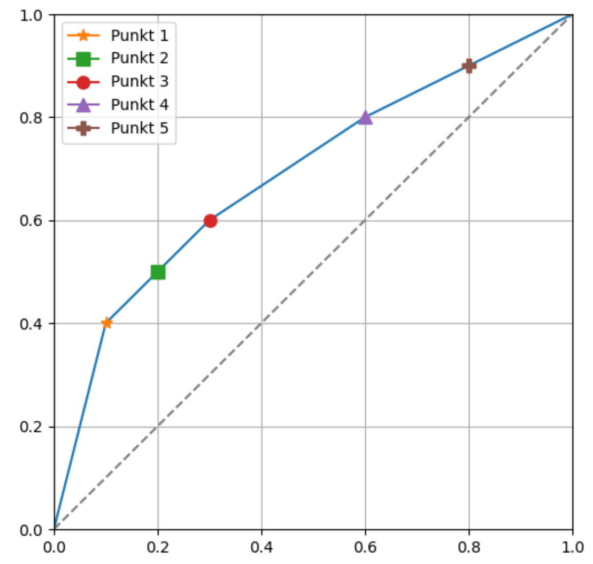
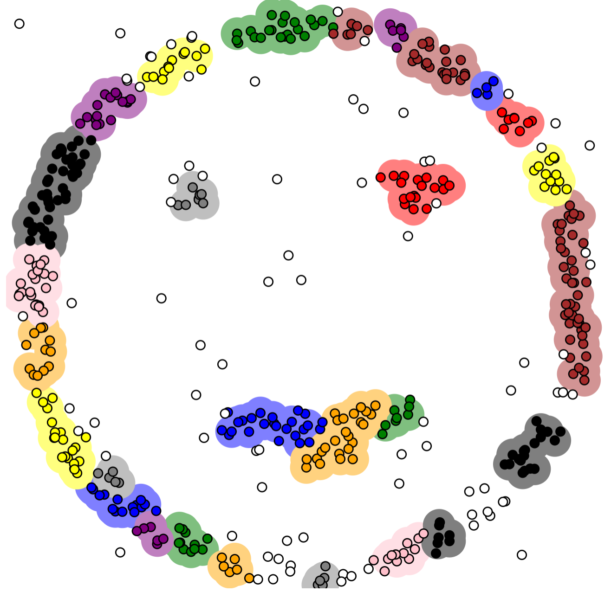
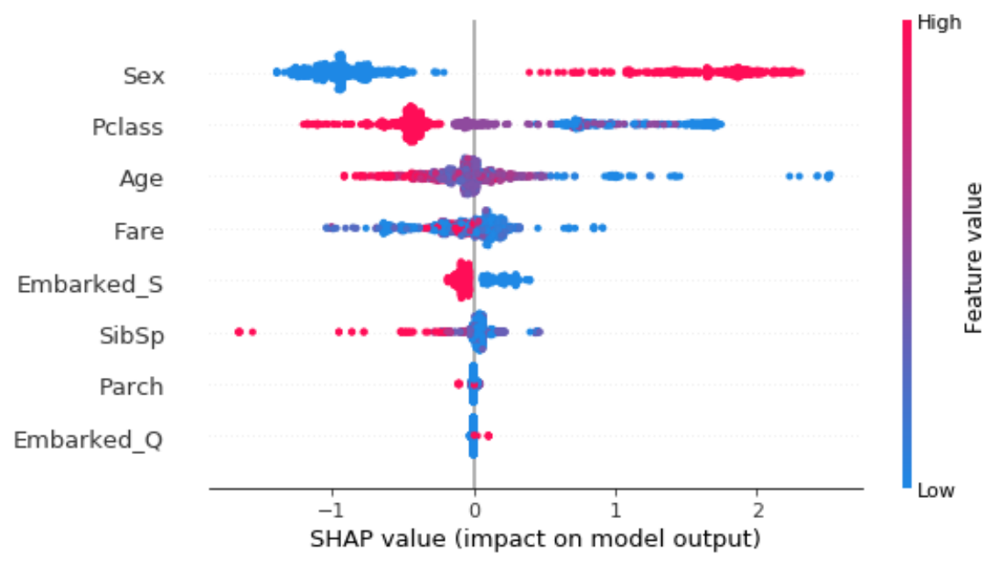

Eksamenstrening
Begge de tidligere eksamenene som interaktive prøver med forklaring på hvert eneste alternativ, en helt ny prøveeksamen for 2026, og en strategi for poengreglene som faktisk lønner seg.
Etter dette kapittelet skal du kunne
- forklare poengreglene (+2.5 / −0.83 / 0 og nullgrense per gruppe) og bruke dem til å bestemme når du skal gjette,
- løse alle oppgavene fra eksamen 2024 og 2025 og forklare hvorfor de fristende feilsvarene er feil,
- gjennomføre en full prøveeksamen på tid og få et karakterestimat,
- kjenne igjen de klassiske fellene som går igjen år etter år.
Uke 1–2 før eksamen: kjør 2024 og 2025 i øvingsmodus. Les forklaringen også når du svarer riktig. Hver forklaring lenker til kapittelet der temaet står. Siste uka: ta prøveeksamen 2026 i eksamensmodus med 4 timers nedtelling, som om det var ekte. Siste kveld: sjekklisten nederst og flashcards i formelarket.
16.1Eksamensformatet
Eksamen er flervalg i Inspera, uten hjelpemidler, med bestemt enkel kalkulator. Fagoversikten sier at pensum er «forelesningene og prosjektene». Formatet har endret seg fra 2024 til 2025, og 2025-formatet er det mest sannsynlige for 2026.
- 10 grupper (deler) à 4 spørsmål, maks 10 poeng per gruppe, 100 totalt.
- Riktig svar: +2.5. Feil svar: −0.83. Ubesvart: 0.
- Nullgrense per gruppe: blir summen i en gruppe negativ, settes den til 0.
- Har du først klikket på et alternativ, kan du bytte, men ikke gjøre spørsmålet blankt igjen.
- Bare ett riktig alternativ per spørsmål (men sensor godkjente to alternativer på 6.4 og 7.4).
- 39 oppgaver, flere av dem med 2–3 delspørsmål (46 delspørsmål totalt).
- Noen spørsmål var «velg ett eller flere».
- Strengere grenser enn NTNU-standard: A ≥ 92 %, B ≥ 82 % (standard er 89 % og 77 %).
- Poengreglene per delspørsmål er ikke oppgitt i løsningsforslaget. Her teller vi 1 poeng per delspørsmål som er helt riktig, uten minuspoeng.
For 2025-formatet bruker vi NTNUs vanlige prosentskala (A ≥ 89, B ≥ 77, C ≥ 65, D ≥ 53, E ≥ 41), siden grensene for 2025 ikke står i løsningsforslaget. For 2024 bruker vi de oppgitte grensene for A og B og standardskalaen for C–E. Faglærer kan justere grensene.
16.2Strategi: når lønner det seg å gjette?
Minuspoengene er laget slik at ren gjetning er verdt null i snitt. Med fire alternativer treffer du med sannsynlighet $\tfrac14$:
Forventet poeng for én ren gjetning blant 4 alternativer
$$E = \tfrac14\cdot 2.5 \;-\; \tfrac34\cdot 0.83 \;=\; 0.625 - 0.6225 \;\approx\; 0$$Det er ingen tilfeldighet: $0.83 \approx 2.5/3$. Straffen for feil er tilpasset så gjetning går i null. Men så snart du vet noe, tipper regnestykket i din favør:
| Situasjon | Sannsynlighet for riktig, $p$ | Forventet poeng $2.5p - 0.83(1-p)$ |
|---|---|---|
| Ren gjetning (4 igjen) | 0.25 | ≈ 0.00 |
| Utelukket ett (3 igjen) | 0.33 | +0.28 |
| Utelukket to (2 igjen) | 0.50 | +0.84 |
| «Ganske sikker» | 0.75 | +1.67 |
Grensen der det lønner seg å svare er $p^* = \frac{0.83}{2.5+0.83} \approx 0.249$. Med andre ord: kan du utelukke minst ett alternativ med god grunn, skal du svare.
Du har utelukket ett av fire alternativer og velger tilfeldig blant de tre som er igjen. Hva er forventet poeng for spørsmålet? (To desimaler.)
Nullgrensen gjør gjetning enda bedre
Nullgrensen per gruppe betyr at en gruppe aldri kan gi minuspoeng. Det gjør fordelingen skjev i din favør: feilene «koster» bare så lenge de har noe å trekke fra. Har du ingen sikre svar i en gruppe, mister du ingenting på å gjette alle fire. Du kan bare vinne.
En gruppe der du ikke kan noe: du gjetter tilfeldig på alle fire spørsmålene (4 alternativer hver). Hva er forventet poeng for gruppen med nullgrense? (To desimaler. Tips: antall riktige er binomisk med $n=4$, $p=0.25$.)
Gruppepoeng med $k$ riktige: $\max(0,\ 2.5k - 0.83(4-k))$, som gir 0, 0.01, 3.34, 6.67 og 10 for $k=0,\dots,4$.
Sannsynlighetene er $\binom4k 0.25^k 0.75^{4-k}$ = 0.316, 0.422, 0.211, 0.047, 0.004.
$E = 0.422\cdot0.01 + 0.211\cdot3.34 + 0.047\cdot6.67 + 0.004\cdot10 \approx 1.06$. Uten nullgrense ville det vært ≈ 0. Nullgrensen er altså verdt omtrent ett poeng i en gruppe du «ikke kan».
Legg merke til: med tre sikre svar er en ren gjetning på det fjerde verdt +0.0025, altså null. Nullgrensen spiller ingen rolle når du allerede har mange poeng i gruppen. Med null eller ett sikkert svar blir gjetningene derimot verdt noe, fordi nullgrensen kutter bort de verste utfallene. Kurven øverst viser forventet poeng for ett enkelt spørsmål som funksjon av $p$. Den krysser null like under $p = 0.25$.
- Svar når du kan utelukke ett alternativ. Da er forventningen positiv uansett gruppe.
- I en svak gruppe (0–1 sikre svar) bør du gjette på alt. Nullgrensen beskytter deg.
- I en sterk gruppe (3 sikre) er ren gjetning på det siste null verdt. Svar hvis du kan utelukke noe, ellers spiller det ingen rolle.
- Ikke klikk før du har bestemt deg. Et klikk kan ikke angres til blankt.
«Én ute, så skyt.» Har du utelukket ett alternativ, skyter du. Nullgrensen er et sikkerhetsnett under hver gruppe, og det er størst der du er svakest.
Tidsbruk
- 4 timer, 40 spørsmål: 6 minutter per spørsmål. De fleste begrepsspørsmål tar under ett minutt, så du har god tid til regneoppgavene.
- Runde 1 (ca. 60–75 min): gå gjennom alt. Svar på det du er sikker på. Flagg resten (Inspera har bokmerke/flagg).
- Runde 2 (ca. 60–90 min): regneoppgaver og flaggede spørsmål. Skriv mellomregninger på kladd. Eliminer alternativer aktivt.
- Runde 3 (30 min): gruppe for gruppe: hvor mange sikre har jeg? Gjett på alt i svake grupper, svar på alt der du har utelukket noe.
- Les spørsmålet to ganger. «Hvilken er ikke…», «mest sannsynlig», «korrekt og nødvendig» – ett ord avgjør.
- Sjekk enhet og fortegn i regneoppgaver: gradient vs. oppdatert verdi, antall lagt til vs. sluttantall, $N$ vs. $N-1$.
Du har to sikre svar i en gruppe, ett spørsmål der du har utelukket to alternativer, og ett du ikke aner noe om. Hva gjør du med de to usikre, og hvorfor?
16.3Temaoversikt: hva har blitt spurt om?
Stolpene viser antall delspørsmål per kapittel i eksamen 2024 (oransje) og 2025 (blå). De telles automatisk fra oppgavene lenger ned. Klikk på kapitteltittelen for å repetere.
- Evaluering og ubalanse (kap. 3) var det største temaet i 2024, med confusion matrix, ROC, precision/recall og resampling. Regn med regneoppgaver her.
- Forsterkningslæring (kap. 14) gikk fra 3 delspørsmål i 2024 til 9 i 2025: to hele grupper om Q-learning og DQN (replay buffer, target network) pluss et kodespørsmål.
- XAI og etikk (kap. 15) var stort i 2024 (SHAP, LIME, Shapley-regning, AI Act), men fraværende i 2025. Det kan komme tilbake.
- Preprosessering (skalering fit på trening, transform på test) har kommet hvert år, i flere varianter. Det er gratispoeng.
- 2025 hadde én gruppe med kodeforståelse (sklearn, numpy, Python). Kjenn igjen
fit,transform,predict,train_test_splitog shapes.
16.4Eksamen 2024 (interaktiv)
Alle 39 oppgavene med fasit fra løsningsforslaget (46 delspørsmål). Formler og figurer er gjengitt fra originalen. Oppgaver merket «velg ett eller flere» krever at du velger alle riktige og ingen gale for å få uttelling.
Hvilken antakelse gjør en lineær modell på formen $y = w_1x_1 + w_2x_2 + w_3x_3 + b$ om dataene den modellerer?
- Modellen antar at det ikke er vekselvirkninger mellom features.
- Modellen antar at den har høy bias.
- Modellen antar at den vil undertilpasse treningsdataene.
- Modellen antar at effekten av hver inputvariabel er avhengig av andre inputvariabler.
Hver feature bidrar med sitt eget ledd $w_ix_i$, og leddene legges sammen. Å øke $x_1$ med én endrer alltid $y$ med $w_1$, uansett hva $x_2$ og $x_3$ er. Det er det «ingen vekselvirkninger» (additivitet) betyr. Det siste alternativet er det motsatte: da måtte modellen hatt ledd som $x_1x_2$.
«Høy bias» og «undertilpasning» kan bli konsekvensen hvis dataene ikke er lineære, men det er ikke noe modellen antar. Skill mellom induktiv bias (antakelsen) og resultatet.
Du har en lineær modell $f(x) = wx + b$, som skal brukes til å predikere $y$-verdier basert på input $x$. Modellen trenes med gradient descent for å minimere en tapsfunksjon $\mathcal L$, og oppdateringsregelen er $\theta \leftarrow \theta - \alpha\frac{\partial \mathcal L}{\partial\theta}$. Du bruker MSE, $\mathcal L = \frac12(y - f(x))^2$, og starter med $w, b = 1, 0$.
Beregn gradientene $\frac{\partial\mathcal L}{\partial w}$ og $\frac{\partial\mathcal L}{\partial b}$ for datapunktet $x=2,\ y=4$. Velg ett eller flere.
- $\frac{\partial\mathcal L}{\partial b} = 3$
- $\frac{\partial\mathcal L}{\partial w} = 2$
- $\frac{\partial\mathcal L}{\partial w} = -6$
- $\frac{\partial\mathcal L}{\partial b} = -3$
- $\frac{\partial\mathcal L}{\partial b} = 2$
- $\frac{\partial\mathcal L}{\partial b} = -2$
- $\frac{\partial\mathcal L}{\partial w} = 4$
- $\frac{\partial\mathcal L}{\partial w} = -4$
$f(2) = 1\cdot 2 + 0 = 2$, så feilen er $y - f = 4 - 2 = 2$. Kjerneregelen gir
$\frac{\partial\mathcal L}{\partial w} = (y-f)\cdot\frac{\partial(y-f)}{\partial w} = -(y-f)\,x = -2\cdot 2 = -4$ og $\frac{\partial\mathcal L}{\partial b} = -(y-f) = -2$.
Negativ gradient betyr at tapet minker når parameteren øker, og det stemmer: modellen predikerer for lavt. Fellene er å glemme minustegnet fra den indre deriverte (gir +4 og +2), eller å glemme faktoren $x$ i $\partial\mathcal L/\partial w$.
Bruk læringsraten $\alpha = 0.1$ og beregn de oppdaterte verdiene av modellparametrene. Velg ett eller flere.
- $w = 1.4$
- $b = -0.2$
- $b = 0.2$
- $w = 0.6$
$w \leftarrow 1 - 0.1\cdot(-4) = 1.4$ og $b \leftarrow 0 - 0.1\cdot(-2) = 0.2$. Begge øker, slik de skal når modellen predikerer for lavt.
$w = 0.6$ og $b = -0.2$ får du hvis du legger til gradienten i stedet for å trekke den fra. Da går du oppover i tapslandskapet (gradient ascent).
Hva er induktivt bias?
- Et resultat av vilkårlige prosesser som kan oppstå i treningsfasen og fører til bias i den resulterende modellen.
- En fellesbetegnelse for over- og undertilpasningen en gitt modell gjør.
- Antakelsene en modell gjør for å generalisere fra treningsdata til usette data.
- En egenskap ved treningsdataene som gir en modell vi tilpasser til dataene en spesifikk type bias.
Induktiv bias er antakelsene som gjør det mulig å generalisere fra endelig mange eksempler til nye punkter: at sammenhengen er lineær, at nære punkter ligner hverandre, at beslutningsflater er akseparallelle (trær), og så videre. Uten slike antakelser kan ingen modell si noe om usette data.
Det første alternativet beskriver tilfeldighet/varians. Det andre blander inn over- og undertilpasning, som er konsekvenser. Det fjerde handler om skjevheter i dataene (data-bias), som er noe annet.
Du har laget en maskinlæringsmodell og skal nå teste den. Hvilken av disse funksjonene vil du bruke til å preprosessere testdataene?
Scaler.transform(x_test), der Scaler-objektet først ble tilpasset på treningsdataene.Scaler.fit(x_test), slik at Scaler-objektet kan gjenbrukes.Scaler().fit_transform(x_test), slik at preprosesseringen tilpasses til testdataene før disse transformeres.
Skaleringen er en del av modellen. Parametrene (gjennomsnitt og standardavvik, eller min og maks) skal estimeres bare fra treningsdata, og så brukes uendret på testdata.
Å kalle fit på testdata lekker informasjon fra testsettet og gir testdataene en annen skala enn den modellen ble trent på. Scaler.fit(x_test) returnerer dessuten ikke transformerte data i det hele tatt. Dette temaet har kommet hvert år.
En modell gir følgende confusion matrix for klassifiseringsterskel 0.3:
| Predikert positiv | Predikert negativ | |
|---|---|---|
| Label positiv | 40 | 10 |
| Label negativ | 30 | 20 |
og følgende for terskel 0.7:
| Predikert positiv | Predikert negativ | |
|---|---|---|
| Label positiv | 25 | 25 |
| Label negativ | 10 | 40 |
Se på ROC-kurven (x-akse FPR, y-akse TPR):

Hvilke utsagn er riktige? Velg ett eller flere.
- Punkt 3 tilsvarer klassifiseringsterskel på 0.7
- Punkt 4 tilsvarer klassifiseringsterskel på 0.3
- Punkt 5 tilsvarer klassifiseringsterskel på 0.3
- Punkt 2 tilsvarer klassifiseringsterskel på 0.7
- Punkt 4 tilsvarer klassifiseringsterskel på 0.7
- Punkt 5 tilsvarer klassifiseringsterskel på 0.7
- Punkt 1 tilsvarer klassifiseringsterskel på 0.3
Regn ut $\text{TPR} = \frac{TP}{TP+FN}$ og $\text{FPR} = \frac{FP}{FP+TN}$:
- Terskel 0.3: TPR $= 40/50 = 0.8$, FPR $= 30/50 = 0.6$, altså punktet (0.6, 0.8) = punkt 4.
- Terskel 0.7: TPR $= 25/50 = 0.5$, FPR $= 10/50 = 0.2$, altså (0.2, 0.5) = punkt 2.
Typiske feil er å dele på kolonnesummen (det gir precision) eller å bytte om akser. Huske-regel: begge ratene deles på radsummen, altså antall faktiske positive eller negative.
Se igjen på ROC-kurven over. Hva svarer punkt 5 til? Velg ett eller flere.
- Den laveste klassifiseringsterskelen av alle punktene 1–5.
- En klassifiseringsterskel som gir høy presisjon.
- Det nest beste valget av klassifiseringsterskel.
- Den høyeste klassifiseringsterskelen av alle punktene 1–5.
- Klassifiseringsterskel på 0.3.
- Det er ikke mulig å si uten å vite klassifiseringsterskelen.
Langs ROC-kurven går terskelen fra 1 i (0, 0) til 0 i (1, 1). Jo lavere terskel, jo flere predikeres positive, og jo høyere blir både TPR og FPR. Punkt 5 har høyest FPR og TPR av punktene og har dermed lavest terskel. Vi trenger ikke tallverdien, bare rekkefølgen langs kurven.
Lav terskel gir mange falske positive og dermed lav presisjon. 0.3 er punkt 4, som vi regnet ut over. «Nest beste» er meningsløst uten et kriterium.
Hva betyr det hvis en modell har en ROC AUC på 0.9?
- Modellen predikerer riktig klasse i 90 % av tilfellene.
- Modellen har en 90 % sannsynlighet for å korrekt predikere positive tilfeller for enhver klassifiseringsterskel.
- Det er en 90 % sannsynlighet for at modellen rangerer et tilfeldig valgt positivt tilfelle høyere enn et tilfeldig valgt negativt tilfelle.
- Modellen har 90 % nøyaktighet ved terskelen 0.5.
ROC AUC er sannsynligheten for at modellen gir et tilfeldig positivt punkt høyere score enn et tilfeldig negativt punkt (slik notatene definerer den). Den oppsummerer alle terskler og er et mål på rangering.
Første og siste alternativ er accuracy, som avhenger av terskelen. Det andre blander inn TPR, som også varierer med terskelen.
Du skal levere en modell til et sykehus som vil finne pasienter med en svært sjelden og dødelig sykdom. Det er altså alvorlig om modellen har mange falske negative. Hvilken metrikk er det viktigst at modellen skårer høyt på?
- Treffsikkerhet / accuracy
- Recall $= \frac{TP}{TP+FN}$
- Presisjon / precision $= \frac{TP}{TP+FP}$
Falske negative er syke pasienter vi overser. Recall har FN i nevneren og straffer nettopp dem. Accuracy er villedende ved sjeldne sykdommer: en modell som sier «frisk» til alle kan få 99.9 %. Precision handler om falske positive, ikke falske negative.
Modellen har høy treffsikkerhet, men sykehuset vil likevel ikke kjøpe den. Du hadde det travelt og studerte verken fordelingen i treningsdataene eller brukte et valideringsdatasett. Hva har sannsynligvis gått galt?
- Fordelingen mellom friske og syke pasienter i treningsdataene er ubalansert.
- Modellen har for lav læringsrate, og uten bruk av valideringsdata har du ikke forsikret deg om at valg av hyperparametre er passende.
- Modellen har overtilpasset på pasienter fra det aktuelle sykehuset, og uten valideringsdata klarte du ikke å fange opp overtilpasningen.
- Du brukte cross entropy som tapsfunksjon, som kun bør brukes til lineær modellering.
Høy accuracy på en sjelden sykdom er det klassiske tegnet på ubalanserte klasser. Modellen lærer å si «frisk» og blir belønnet for det (notatene kaller det prior probability shift: prediksjonen domineres av $p(C_k)$).
For lav læringsrate gir en dårlig trent modell, ikke kunstig høy accuracy. Overtilpasning er mulig, men oppgaven peker på at du ikke studerte fordelingen. Cross-entropy er standard for all klassifisering, også i nevrale nett.
Du lager i stedet en modell til politiet, som skal avgjøre om meldinger på Twitter/X er verdt en ressurskrevende og kostbar utrykning. Det er altså viktig å unngå mange falske positive. Hvilken metrikk er viktigst?
- Spesifisitet / specificity $= \frac{TN}{TN+FP}$
- Recall $= \frac{TP}{TP+FN}$
- Presisjon / precision $= \frac{TP}{TP+FP}$
Falske positive er unødvendige utrykninger. Precision er andelen alarmer som var ekte, og den faller når FP øker.
Spesifisitet straffer også FP, så den er ikke helt gal. Men når ekte trusler er sjeldne, blir TN enorm og spesifisiteten ligger nær 1 selv med mange falske alarmer. Derfor er precision det beste svaret, og det er fasit. Recall handler om FN.
Et datasett har 2000 datapunkter, der 90 % tilhører klasse $A$ og resten klasse $B$. Du vil gjøre undersampling for å få et balansert datasett. Hvor mange datapunkter kan du beholde fra klasse $A$?
- 200
- 100
- 400
- 1800
- 900
$A$ har 1800 punkter og $B$ har 200. Undersampling trekker like mange fra majoritetsklassen som det finnes i minoritetsklassen: 200. 1800 er antallet du har, ikke antallet du beholder. 400 er størrelsen på hele det balanserte datasettet.
Du vil heller prøve oversampling. Hvor mange datapunkter må da legges til i klasse $B$?
- 200
- 1800
- 100
- 1600
- 400
- 2000
$B$ skal opp fra 200 til 1800, så du legger til $1800 - 200 = \mathbf{1600}$ kopier. 1800 er sluttantallet, og det er den vanligste fellen: les om spørsmålet gjelder «hvor mange blir det» eller «hvor mange legges til».
Hvilken av disse er en korrekt implementasjon av binary cross entropy loss?
-y*np.log(1-y_pred) - (1-y)*np.log(y_pred)-y_pred*np.log(1-y) - (1-y_pred)*np.log(y)-y*np.log(y_pred) - (1-y)*np.log(1-y_pred)-y_pred*np.log(y) - (1-y_pred)*np.log(1-y)
$\mathcal L = -y\ln\hat y - (1-y)\ln(1-\hat y)$. Sjekk med $y=1$: bare $-\ln\hat y$ står igjen, og den er stor når $\hat y \to 0$. Det er riktig oppførsel.
Det første alternativet bytter om logaritmene, så modellen straffes for riktige svar. De to andre tar logaritmen av labelen $y \in \{0,1\}$, og $\log 0 = -\infty$.
Hvilken er en korrekt implementasjon av vektet cross entropy loss? Vekten $w_0$ gjelder klassen med target $y=0$, og $w_1$ klassen med $y=1$.
-w_0*y*np.log(y_pred) - w_1*(1-y)*np.log(1-y_pred)-w_0*y_pred*np.log(y) - w_1*(1-y_pred)*np.log(1-y)-w_1*y_pred*np.log(1-y) - w_0*(1-y_pred)*np.log(y)-w_1*y*np.log(y_pred) - w_0*(1-y)*np.log(1-y_pred)
Leddet med $y$ er bare aktivt når $y=1$, så det skal ganges med $w_1$. Leddet med $(1-y)$ er bare aktivt når $y=0$, så det skal ganges med $w_0$: $\mathcal L = -w_1 y\ln\hat y - w_0(1-y)\ln(1-\hat y)$ (notatene, likning 43).
Det første alternativet er den lumske fellen: riktig form, men vektene er byttet om. De to i midten tar log av $y$.
Klasse A har 9000 datapunkter og klasse B har 1000. Hvilken kombinasjon av vekter bør du velge i en vektet cross entropy loss?
- $w_A = 0.0001,\ w_B = 0.009$
- $w_A = 1,\ w_B = 0.1$
- $w_A = 0.1,\ w_B = 1$
Vektene skal være omvendt proporsjonale med klassestørrelsen, så minoritetsklassen B får størst vekt. Eksakt balanse ville vært $w_A/w_B = 1000/9000 \approx 0.11$, og $0.1/1$ er nærmest.
Det andre alternativet går feil vei og forsterker ubalansen. Det første har riktig retning, men forholdet er $0.009/0.0001 = 90$, altså ti ganger for kraftig. Det er forholdet som teller, ikke størrelsen.
Hvilken type parameter er læringsraten?
- En testparameter
- En modellparameter
- En treningsparameter
- En hyperparameter
Læringsraten styrer hvordan treningen foregår, men er ikke en del av den ferdige modellen. Modellparametrene er $w$ og $b$, som læres fra data. Notatene: «Hyperparametre er parametre som definerer læringsprosessen, men ikke modellen.» «Treningsparameter» er ikke et begrep i pensum.
Hva angir batch size?
- Antall ganger modellen oppdateres per epoke
- Antall ganger modellen trenes på hele datasettet
- Antall treningsdatapunkter som brukes per iterasjon av treningen
- Antall egenskaper (features) som brukes i treningen
Batch size $B$ er antall datapunkter som brukes til å estimere gradienten i én oppdatering. Det første alternativet er $N/B$ (iterasjoner per epoke), det andre er antall epoker, og det siste er antall features.
Et treningsdatasett har 10 000 datapunkter, og du bruker batch size 500. Hvor mange iterasjoner blir det i én epoke?
- 20
- 50
- 100
- 5
Én epoke = alle punktene har vært med én gang. Mini-batch SGD gir $N/B = 10\,000/500 = 20$ oppdateringer per epoke.
Hvordan bestemmer et beslutningstre hvilken feature det skal dele på i en gitt node?
- Det velger egenskapen med færrest mulige verdier for å minimere entropi.
- Det velger alltid den første egenskapen i datasettet.
- Det velger egenskapen som maksimalt reduserer usikkerhet i datasettet.
- Det velger tilfeldig en egenskap fra de tilgjengelige egenskapene.
Treet prøver kandidatsplitt (feature og terskel) og velger det som gir størst reduksjon i urenhet, målt med Gini eller entropi (informasjonsgevinst). Antall verdier i en feature er ikke kriteriet. Tilfeldige features brukes i isolation forest, og random forest velger det beste splittet blant et tilfeldig utvalg features, men et vanlig beslutningstre gjør ingen av delene.
Hva er viktig for å lage en god random forest-modell basert på beslutningstrær?
- Beslutningstrærne har ulike dybder, som til sammen gir en god balanse mellom over- og undertilpasning.
- Beslutningstrærne er diverse, som betyr at de bruker ulike deler av data og features, og uavhengige.
- Beslutningstrærne har i gjennomsnitt lært de samme mønstrene fra dataene, som betyr at de bruker et representativt utvalg av data og features.
- Beslutningstrærne er trent på samme bootstrap-trekning fra treningsdataene for å oppnå en modell med lavest mulig varians.
Et gjennomsnitt av mange modeller reduserer variansen bare hvis feilene deres er lite korrelerte. Random forest får det til med bootstrap av datapunkter og et tilfeldig utvalg features ved hver splitt.
Det tredje og fjerde alternativet beskriver like trær, og da gir ensemblet ingen gevinst. Ulik dybde er ikke mekanismen.
Hvilket utsagn er riktig i konteksten gradient boosting?
- Gradientens verdi indikerer hvor mange trær som skal legges til i modellen.
- For å unngå å bygge en for kompleks modell legger gradient boosting til ett tre av gangen under treningsprosessen.
- Alle beslutningstrærne trenes samtidig for å finne den beste kombinasjonen av feature splits.
- Hvert påfølgende beslutningstre trenes til å minimere residualene fra det forrige treet.
Hver ny modell tilpasses pseudo-residualene $y - \hat y$ og legges til med en læringsrate. Det er gradient descent i rommet av funksjoner.
Fasit forenkler: residualene er til hele ensemblet så langt, ikke bare til forrige tre. Det andre alternativet er halvsant. Gradient boosting legger faktisk til ett tre om gangen, men ikke «for å unngå en for kompleks modell». Flere trær gjør modellen mer kompleks. Trærne trenes sekvensielt, ikke samtidig.
Hva er hovedforskjellen i hvordan data deles opp i kryssvalidering og bootstrapping?
- Kryssvalidering kan brukes for alle typer modeller, mens bootstrapping brukes for beslutningstrær og skoger.
- Kryssvalidering brukes på store datasett, mens bootstrapping er basert på tilfeldig sampling med tilbakelegging, og derfor brukes på små datasett.
- Kryssvalidering bruker kun treningsdata, mens bootstrapping bruker kun testdata.
- Kryssvalidering deler datasettet i ikke-overlappende delsett, mens bootstrapping bruker tilfeldig sampling med tilbakelegging, som kan inkludere overlappende datapunkter.
- Kryssvalidering deler datasettet i overlappende delsett, mens bootstrapping deler i ikke-overlappende delsett.
k-fold deler dataene i $k$ disjunkte folder, og hvert punkt er i valideringsfolden nøyaktig én gang. Bootstrap trekker med tilbakelegging, så samme punkt kan komme flere ganger, og omtrent 37 % kommer aldri med. Bootstrap er en generell statistisk teknikk og ikke begrenset til trær. Det siste alternativet er det omvendte av det riktige.
Hva er hovedformålet med backpropagation i et nevralt nettverk?
- Å justere vektene i nettverket for å minimere feilen mellom predikert og faktisk verdi.
- Å finne prediksjonen basert på input data i et nevralt nettverk, også kjent som en forward pass.
- Å legge til flere lag i nettverket for å forbedre nøyaktigheten.
- Å initialisere vektene i nettverket tilfeldig.
Backpropagation sender feilen bakover gjennom nettverket med kjerneregelen og gir $\partial\mathcal L/\partial w$ for alle vekter. Gradienten brukes til å justere vektene slik at tapet minker. Strengt tatt er det gradient descent som gjør selve justeringen, mens backprop regner ut gradienten (jf. 2025, del 5.4). Det andre alternativet er forward pass.
I hvilket tilfelle vet vi at gradient descent vil finne et globalt minimum?
- Lineær regresjon
- Konvekse funksjoner
- Nevrale nettverk
- Monotone funksjoner
For en konveks funksjon er ethvert lokalt minimum også globalt, så gradient descent med passende læringsrate ender i det globale minimumet. Nevrale nett har ikke-konvekse tapsflater. Monotone funksjoner har ofte ikke noe minimum i det hele tatt.
Lineær regresjon med MSE er også konveks, så «Lineær regresjon» er strengt tatt ikke feil. Det er et spesialtilfelle av det generelle svaret, men fasiten godtok bare «Konvekse funksjoner». Velg det mest generelle og presise svaret.
Hva betyr det hvis en modell for anomalideteksjon gir mange falske positive?
- Modellen identifiserer mange normale datapunkter som anomalier.
- Modellen har høy accuracy, men lav recall.
- Modellen er trent på for få anomalier.
- Modellen klarer ikke å identifisere alle anomaliene.
«Positiv» betyr her «anomali». En falsk positiv er et normalt punkt som flagges som anomali, altså en falsk alarm. Det siste alternativet beskriver falske negative (lav recall).
Hvilken kategori tilhører k-means?
- Sentroidebasert
- Tetthetsbasert
- Hierarkibasert
- Fordelingsbasert
k-means starter med sentroider, tilordner hvert punkt til nærmeste og flytter sentroidene til gjennomsnittet: sentroidebasert.
Hvilken kategori tilhører DBSCAN?
- Tetthetsbasert
- Sentroidebasert
- Hierarkibasert
- Fordelingsbasert
DBSCAN definerer klynger som områder med høy tetthet (minst min_samples naboer innen $\varepsilon$). Isolerte punkter blir outliers. Fordelingsbasert (f.eks. Gauss-blandinger) og hierarkibasert skal du ha hørt om, men ikke kunne i detalj.
Hva brukes Isolation Forest til i konteksten av anomalideteksjon?
- Klassifisering av data gjennom flere beslutningstrær.
- Å bygge lineære modeller for å separere normale data fra anomalier.
- Dimensjonsreduksjon for identifisering av outliers.
- Å isolere datapunkter ved å dele opp dataene gjennom beslutningstrær.
Isolation Forest bygger trær med tilfeldige splitt (tilfeldig feature og verdi) til hvert punkt ligger i sin egen løvnode. Anomalier er «få og annerledes» og isoleres etter få splitt, altså en kort sti fra roten. Det er trær, men ikke klassifisering, siden det ikke finnes labels. Det første alternativet er derfor den fristende fellen.
Hva er fordelen ved å bruke PCA?
- Hovedkomponentene reduserer datasettets varians til et lavere antall dimensjoner for enklere visualisering.
- Hovedkomponentene bevarer informasjon om alle originale funksjoner i dataene.
- Hovedkomponentene er ukorrelerte, og ved å bruke dem reduserer vi datasettets dimensjoner samtidig som mest mulig varians beholdes.
- Hovedkomponentene er alltid korrelerte og fanger opp maksimal informasjon om variasjoner i dataene.
PC-ene er ortogonale (ukorrelerte) retninger sortert etter hvor mye varians de forklarer. Vi beholder de første og mister minst mulig varians. Målet er å bevare varians, ikke å redusere den. Kutter vi komponenter, mister vi noe informasjon. Det siste alternativet sier det motsatte av sannheten.
Hva er prinsipalkomponentene vi finner når vi gjør PCA?
- De representerer de opprinnelige dataenes sentrale punkt.
- De er egenvektorene til kovariansmatrisen til dataene.
- De representerer antall features som beholdes etter dimensjonsreduksjon.
- De representerer den lineære delen av kovariansen i datasettet.
PC-ene er egenvektorene til kovariansmatrisen $S$, og egenverdiene er variansen langs hver av dem. Det sentrale punktet er gjennomsnittet, som vi trekker fra før vi regner kovarians. Antall komponenter som beholdes er en hyperparameter, ikke selve komponentene.
Hva er vanlig bruk av t-SNE i maskinlæring?
- t-SNE brukes til å klynge datapunkter, basert på sannsynlighet for naboskap.
- t-SNE brukes for å finne ut hvilke høydimensjonale datapunkter som følger en t-fordeling i en lavere dimensjon.
- t-SNE brukes ofte til å redusere dimensjonene i datasett for visualisering.
- t-SNE brukes hovedsakelig til klassifisering.
t-SNE brukes mest til å lage 2D- eller 3D-kart over høydimensjonale data. Klynger kan bli synlige i plottet, men t-SNE tilordner ingen klyngelabels. t-fordelingen er et designvalg for $Q$ i lavdimensjonalt rom, ikke noe dataene «følger».
Hvilken av disse egenskapene gjør DBSCAN særlig robust?
- Den kan bruke ulike hyperparametre i ulike klynger.
- Hvorvidt et punkt identifiseres som kjernepunkt er ikke sensitivt for valg av epsilon.
- Den identifiserer outliers og prøver ikke å putte disse i klynger.
- Hyperparameteren som angir antall klynger er valgfri.
DBSCAN merker punkter i områder med lav tetthet som støy (label −1) i stedet for å tvinge dem inn i en klynge. Dermed drar ikke outliers klyngene skjevt, slik de drar k-means-sentroider.
$\varepsilon$ og min_samples er globale, og det er en kjent svakhet. Om et punkt er kjernepunkt avhenger direkte av $\varepsilon$. DBSCAN har ingen parameter for antall klynger.
Hvilken rolle spiller Kullback–Leibler-divergens i t-SNE?
- KL-divergens brukes til å måle forskjellen mellom sannsynlighetsfordelingen i det høydimensjonale rommet og den projiserte sannsynlighetsfordelingen i det lavdimensjonale rommet.
- KL-divergens brukes til å måle korrelasjonen mellom datapunkter i det høydimensjonale rommet og representasjonen av dataene i det lavdimensjonale rommet.
- KL-divergens brukes til å øke ytelsen til t-SNE sammenlignet med PCA.
- KL-divergensen påvirker hvor mange nabopunkter som tas med i tilpasningen av den gaussiske fordelingen i det høydimensjonale rommet og t-fordelingen i det lavdimensjonale rommet.
$D_{KL}(P\|Q) = \sum P\log\frac{P}{Q}$ er tapsfunksjonen. t-SNE flytter punktene i lavdimensjonalt rom med gradient descent for at naboskapsfordelingen $Q$ skal ligne $P$. Det er ikke en korrelasjon. Antall naboer styres av perplexity.
Når bør vi bruke k-means?
- Når vi ikke har en god hypotese om hvor mange klynger som finnes.
- Når features har ulike størrelsesordener.
- Når klyngene ikke er lineært separerbare.
- Når avstanden innad i klyngen er mindre enn avstandene mellom klyngene.
k-means måler likhet som avstand til sentroiden, så den fungerer når klyngene er kompakte og godt atskilt (liten avstand innad, stor avstand mellom). Den krever at du velger $k$. Den er avstandsbasert, så features må skaleres. Den feiler på ringer og andre ikke-konvekse former.
Figuren viser resultatet av en DBSCAN-modell med dårlig valg av parameter. Fargene er klynger, og hvite punkter er støy. Hvilket dårlig parametervalg har skjedd?

- For lav verdi av epsilon.
- For lav verdi av min_points.
- For høy verdi av min_points.
- For høy verdi av epsilon.
Ringen og munnen burde vært hver sin sammenhengende klynge, men er delt opp i mange små fragmenter, og det er mange støypunkter. Det skjer når $\varepsilon$ er for liten: nabolagene rekker ikke over til neste punkt, så kjedene brytes. For stor $\varepsilon$ ville slått sammen ring, øyne og munn til én klynge. For lav min_points gir færre støypunkter, ikke flere.
For høy min_points kan også gi mer støy og noe oppsplitting, men mange korte, tette fragmenter er det typiske tegnet på for liten $\varepsilon$, og det er fasit.
Hva er en policy i reinforcement learning?
- En funksjon som gir en verdi for hver tilstand-handling-par.
- Et mål som agenten prøver å maksimere over tid.
- Et funksjonsestimat som representerer kvaliteten på en action basert på agentens umiddelbare belønning.
- En strategi som bestemmer hvilken handling agenten skal ta i en gitt tilstand.
En policy $\pi(s)$ sier hvilken handling agenten tar i hver tilstand. Det første alternativet er Q-funksjonen $Q(s,a)$, og det andre er den (diskonterte) kumulative belønningen. Policyen kan utledes fra Q, f.eks. greedy $\pi(s) = \arg\max_a Q(s,a)$, men den er ikke det samme som Q.
Bellman-likningen er $Q^{new}(S_t,A_t) \leftarrow (1-\alpha)\cdot Q(S_t,A_t) + \alpha\cdot\left(R_{t+1} + \gamma\max_A Q(S_{t+1},A)\right)$. Hva medfører en høy verdi av $\gamma$?
- Læringen av Q-verdiene blir svak for såkalt «catastrophic forgetting», hvor agenten glemmer Q-verdier lært tidlig i treningen.
- Læringen av Q-verdier domineres av estimatet av fremtidige tilstander.
- Læringen av Q-verdier domineres av den umiddelbare rewarden fra environmentet.
- Læringen av Q-verdier domineres av de gamle Q-verdiene.
$\gamma$ ganges med estimatet av fremtidig verdi, $\max_A Q(S_{t+1},A)$. Med $\gamma$ nær 1 veier fremtiden tungt. Med liten $\gamma$ dominerer umiddelbar reward, som er det tredje alternativet. Gamle Q-verdier dominerer når $\alpha$ er liten. Catastrophic forgetting hører til nevrale nett og DQN.
Hva er forholdet mellom tapet (loss) under treningen i Q-learning og rewarden agenten mottar fra miljøet?
- Loss minker så lenge reward er slik at Q-verdien oppdateres under læring.
- Reward kan ikke øke uten at loss samtidig minker.
- Loss er det samme som reward, med negativt fortegn.
- Det er ikke nødvendigvis en sammenheng mellom loss i agentens trening og reward agenten mottar fra miljøet.
Tapet måler hvor godt Q-estimatet treffer TD-målet $r + \gamma\max Q$, og det målet flytter seg selv. Når agenten blir bedre og oppdager nye tilstander, kan tapet øke fordi Q-verdiene endrer seg. Tapet kan også minke mens rewarden står stille. Loss er ikke −reward.
Hvilket utsagn er korrekt om LIME?
- LIME produserer globale feature importances for en hvilken som helst maskinlæringsmodell.
- LIME tilpasser en tolkbar modell i nabolaget rundt et enkelt datapunkt.
- LIME kan brukes til å minimere kompleksiteten til en hvilken som helst maskinlæringsmodell, slik at denne kan tolkes direkte.
- LIME brukes ofte til å erstatte nevrale nettverk med tolkbare modeller som beslutningstrær.
LIME (Local Interpretable Model-agnostic Explanations) lager små variasjoner rundt ett datapunkt, vekter dem etter nærhet og tilpasser en enkel, lineær modell lokalt. Forklaringen er lokal, ikke global. Den originale modellen endres eller erstattes ikke.
Se på SHAP-plottet (Titanic, modellen predikerer overlevelse). Hvilken feature påvirker modellprediksjonen mest?

- Embarked_S
- Pclass
- Age
- Sex
I et SHAP-beeswarm-plott er featurene sortert etter gjennomsnittlig $|\text{SHAP}|$, med den viktigste øverst. Sex har også størst spredning, fra omtrent −1.4 til +2.3.
Hvordan påvirker det modellprediksjonen om feature Pclass har en høy verdi?
- Det driver modellprediksjonen opp sammenliknet med gjennomsnittsprediksjonen.
- Det trekker modellprediksjonen ned sammenliknet med gjennomsnittsprediksjonen.
- Det forteller oss at passasjerer med en høy verdi av Pclass ofte har en lav verdi av Sex.
- Det gjør at modellen predikerer lav sannsynlighet for overlevelse.
- Det fører alltid til en høy modellprediksjon.
For Pclass ligger de røde punktene (høy verdi, altså 3. klasse) til venstre for 0. Negativ SHAP-verdi trekker prediksjonen ned fra gjennomsnittsprediksjonen (base value).
Alternativet om lav sannsynlighet for overlevelse er fristende, men SHAP sier noe om bidraget relativt til gjennomsnittet, ikke om sluttverdien. Andre features kan dra prediksjonen opp igjen. Plottet viser heller ikke korrelasjon mellom features.
Shapley-verdien til spiller $i$ i et spill med $N$ spillere er
$$\phi_i(v) = \sum_{S\subseteq N\setminus\{i\}} \frac{|S|!\,(N-|S|-1)!}{N!}\bigl(v(S\cup\{i\}) - v(S)\bigr)$$
Gitt $N=3$ spillere og den karakteristiske funksjonen
$v(1)=2,\ v(2)=4,\ v(3)=5,\ v(\{1,2\})=3,\ v(\{1,3\})=3,\ v(\{2,3\})=2,\ v(\{1,2,3\})=3$.
Hva er Shapley-verdiene til de tre spillerne?
- $\phi_1=\frac12,\ \phi_2=1,\ \phi_3=2$
- $\phi_1=\frac12,\ \phi_2=\frac32,\ \phi_3=\frac12$
- $\phi_1=\frac12,\ \phi_2=\frac32,\ \phi_3=1$
- $\phi_1=\frac12,\ \phi_2=1,\ \phi_3=\frac32$
Vektene for $N=3$ er $\frac13$ når $|S|=0$, $\frac16$ når $|S|=1$ og $\frac13$ når $|S|=2$. Vi bruker $v(\emptyset)=0$.
- $\phi_1 = \frac13(2-0) + \frac16(3-4) + \frac16(3-5) + \frac13(3-2) = \frac23 - \frac16 - \frac13 + \frac13 = \frac12$
- $\phi_2 = \frac13(4) + \frac16(3-2) + \frac16(2-5) + \frac13(3-3) = \frac43 + \frac16 - \frac12 = 1$
- $\phi_3 = \frac13(5) + \frac16(3-2) + \frac16(2-4) + \frac13(3-3) = \frac53 + \frac16 - \frac13 = \frac32$
Snarvei: effektivitet krever $\sum\phi_i = v(\{1,2,3\}) = 3$. Det utelukker de to første alternativene (summer 3.5 og 2.5). Regn så ut bare $\phi_2$ for å skille de to siste.
Hvilke utsagn er sanne om AI Act? Velg ett eller flere.
- AI Act er verdens første AI-spesifikke regulering.
- AI Act vil regulere AI-systemer basert på samfunnsrisiko.
- AI Act deler AI-systemer inn i flere kategorier, hvor AI-systemer til bruk i helsesektoren har en egen kategori.
- AI-systemer som medfører høy samfunnsrisiko vil bli forbudt av AI Act.
AI Act er risikobasert: uakseptabel risiko er forbudt, høy risiko er tillatt med strenge krav, begrenset risiko får åpenhetskrav, og minimal risiko er fri. Helse har ingen egen kategori (helsesystemer havner ofte i høyrisiko). Høyrisikosystemer forbys ikke, bare de med uakseptabel risiko.
«Verdens første AI-spesifikke regulering» er fasit, men omdiskutert. Kina hadde regler for anbefalingsalgoritmer og generativ KI før 2024. Mer presist er «verdens første omfattende AI-lov».
Hva betyr velgjørenhet som et etisk prinsipp for AI?
- AI skal ikke fremme kommersielle mål.
- AI skal være tilgjengelig for alle.
- AI-systemer skal fremme menneskelig velferd og gjøre godt.
- AI-systemer skal operere uten feil.
Velgjørenhet (beneficence) betyr å gjøre godt og fremme velferd. Ikke-skade (non-maleficence) er et eget prinsipp. Tilgjengelighet for alle hører til rettferdighet. Feilfrihet er urealistisk og ikke et etisk prinsipp.
Hvordan kan et AI-system bryte med det etiske prinsippet autonomi? Velg ett eller flere.
- Ved å gi brukeren full kontroll over sine data.
- Ved å alltid kreve menneskelig godkjenning før det tar en beslutning.
- Ved å tvinge beslutninger på brukeren uten deres samtykke eller kontroll.
- Ved å manipulere brukere uten at disse vet at de blir påvirket.
- Ved å redusere effektiviteten i en organisasjon.
Autonomi er menneskers rett til å ta egne, informerte valg. Beslutninger uten samtykke og skjult manipulasjon bryter med den. Full kontroll over egne data og krav om menneskelig godkjenning styrker autonomien. Effektivitet er ikke et etisk prinsipp.
16.5Eksamen 2025 (interaktiv)
Ti grupper à fire spørsmål med fasit fra løsningsforslaget, inkludert endringene sensor gjorde i «Kommentar til sensur»: på 6.4 og 7.4 ble to alternativer godkjent. Spørsmålene sensor diskuterte uten å endre fasit (2.1, 2.2, 2.3, 4.4, 6.3, 9.4 og 10.4) er merket i forklaringen. Eksamensmodus bruker de ekte 2025-reglene.
Du har et datasett med Region (kategorisk, 5 mulige verdier), Daily_usage (kontinuerlig), Paid_user (kategorisk, {yes, no}) og Converted (target, {0,1}). Du planlegger å trene en logistisk regresjonsmodell. Hvilket preprosesseringssteg er korrekt og nødvendig?
- Transformer de kategoriske variablene Region og Paid_user til numeriske verdier før trening
- Normaliser Converted slik at gjennomsnittet er 0 før trening
- Tilpass skaleringen av Daily_usage på hele datasettet for å sikre konsistent skalering
- Fjern alle kategoriske variabler fordi logistisk regresjon kun støtter numeriske input
Logistisk regresjon regner $w^Tx+b$ og trenger tall, så kategoriske variabler må enkodes: 0/1 for Paid_user og gjerne one-hot for Region. Label encoding av Region (0–4) ville lagt inn en kunstig rekkefølge.
Target skal være 0/1, ikke sentreres. Skalering tilpasset på hele datasettet er datalekkasje. Å fjerne de kategoriske variablene kaster bort informasjon når du heller kan enkode dem. Det er riktig at modellen trenger numeriske input, men det er ikke en grunn til å fjerne dem.
En logistisk regresjonsmodell predikerer med $\hat y = \sigma(w^Tx + b)$, der $\sigma(z) = \frac{1}{1+e^{-z}}$. Hvilket utsagn beskriver korrekt hva outputen $\hat y$ er?
- Outputen er alltid nøyaktig 0 eller 1
- Outputen er garantert å være lik den sanne sannsynligheten for hendelsen
- Outputen er en verdi i intervallet (0,1) og kan tolkes som modellens estimerte sannsynlighet
- Outputen avhenger ikke av modellparametrene w og b etter trening
Sigmoid avbilder $\mathbb R$ på det åpne intervallet $(0,1)$, og $\hat y$ tolkes som et estimat av $p(y=1\mid x)$. Det er ikke garantert lik den sanne sannsynligheten: modellen kan være feilspesifisert eller dårlig kalibrert. Du får 0 eller 1 først når du bruker en terskel.
Under trening av en logistisk regresjonsmodell med gradient descent begynner treningstapet å oscillere i stedet for å minke jevnt. Anta at implementasjonen er korrekt. Hva er den mest sannsynlige årsaken?
- Modellen inneholder for mange parametere til at gradient descent kan brukes
- Datasettet er perfekt lineært separerbart
- Sigmoid-funksjonen σ(z) er ikke deriverbar
- Læringsraten er for høy
Med for stor $\eta$ hopper hvert steg over minimumet, frem og tilbake, og tapet oscillerer eller divergerer. Er dataene perfekt separerbare, vokser vektene uten grense mens tapet går jevnt mot 0, uten å oscillere. Sigmoid er deriverbar overalt. Antall parametre hindrer ikke gradient descent, som også trener nevrale nett med millioner av parametre.
Du bruker min–maks-skalering på en feature $x$. Hva er riktig måte å utføre skaleringen på når du trener og evaluerer en modell?
- Tilpass skaleringen på hele datasettet, og splitt deretter i trening og test
- Tilpass skaleringen kun på testdatasettet, og bruk den deretter på treningsdatasettet
- Splitt datasettet i trening og test, tilpass skaleringen kun på treningsdatasettet, og bruk den på testdatasettet
- Tilpass separate skaleringer uavhengig på treningsdatasettet og testdatasettet
Først splitte, så fit på trening og transform på begge. Å tilpasse på hele datasettet lekker min/maks fra testdataene. Separate skaleringer gir trening og test ulik skala: verdien 0.5 betyr da forskjellige ting i de to settene, og modellen evalueres på data i en annen skala enn den ble trent på.
I en binær klassifikasjonssetting beregnes posteriorsannsynligheten som $p(C=1\mid x) = \frac{p(C=1)\,p(x\mid C=1)}{p(x)}$. Hva er hensikten med leddet $p(x)$?
- Det er avhengig av klasseverdien og må beregnes separat for hver klasse
- Det representerer sannsynligheten for å observere $x$ når klassen er $C = 1$
- Det sikrer at posteriorsannsynlighetene over alle klasser utgjør en gyldig sannsynlighetsfordeling
- Det bestemmer hvilken klasse som har størst posteriorsannsynlighet
$p(x) = \sum_k p(x\mid C_k)p(C_k)$ er evidensen, en normaliseringskonstant som gjør at posteriorene summerer til 1. Den er lik for alle klasser, så den påvirker ikke hvilken klasse som vinner. Derfor kan naiv Bayes droppe den og bruke $p(C_k\mid x) \propto p(x\mid C_k)p(C_k)$. Det andre alternativet beskriver likelihooden $p(x\mid C=1)$. Diskutert av sensor, uten endring.
En naiv Bayes-klassifikator brukes på e-poster med features $x_1$ (antall «offer»), $x_2$ (antall «free») og $x_3$ (antall lenker). Likelihood beregnes som
$p(x_1,x_2,x_3\mid C=spam) = p(x_1\mid C=spam)\,p(x_2\mid C=spam)\,p(x_3\mid C=spam)$.
Hvilket utsagn er korrekt?
- Uavhengighetsantakelsen kreves kun for numeriske features
- Feature-ene må være statistisk uavhengige i det faktiske datasettet
- Modellen antar betinget uavhengighet selv om den sanne datadistribusjonen bryter denne antakelsen
- Hvis feature-ene er avhengige, kan klassifikatoren ikke beregne posterior
Naiv Bayes antar at featurene er uavhengige gitt klassen. Det er en forenkling, og den holder sjelden helt («offer» og «free» opptrer trolig sammen). Modellen kan likevel regne ut et ukalibrert estimat og klassifisere godt, fordi vi ofte bare trenger riktig rangering mellom klassene. Antakelsen gjelder alle typer features. Diskutert av sensor, uten endring.
I et produksjonsdatasett med 10 000 enheter er 9 800 merket som normale og 200 som defekte. Random oversampling brukes ved å duplisere minoritetsklassen til begge klasser har lik størrelse. Hvilket utfall er mest sannsynlig?
- Oversampling endrer den underliggende sannsynlighetsfordelingen til minoritetsklassen
- Oversampling reduserer antall eksempler i majoritetsklassen
- Klassifikatoren blir mindre tilbøyelig til å overtilpasse fordi klassene er numerisk balanserte
- Klassifikatoren kan overtilpasse fordi identiske eksempler fra minoritetsklassen gjentas i treningsdataene
Hver defekt enhet gjentas omtrent 49 ganger. Modellen kan pugge akkurat disse 200 punktene i stedet for å lære et generelt mønster. Notatene sier rett ut at oversampling kan føre til overtilpasning.
Det er undersampling som reduserer majoritetsklassen. Det første alternativet er fristende: klassefordelingen (prioren) i treningsdataene endres, men fordelingen innen minoritetsklassen gjør det ikke, for det er de samme punktene. Diskutert av sensor, uten endring.
Et beslutningstre vurderer tre features for rotnoden. Gini-urenheten $G$ etter splitt er: A: 0.28, B: 0.41, C: 0.07. Hvilken feature bør velges?
- Alle features gir gyldige split, så valget påvirker ikke impuriteten
- Feature A
- Feature C
- Feature B
Lavest (vektet) Gini etter splitt betyr renest barn og størst reduksjon i urenhet. Det er C med 0.07. Fellen er å tro at høy verdi er bra. Det gjelder informasjonsgevinst (reduksjonen), ikke urenheten selv.
Bagging trener flere modeller på ulike bootstrap-samples (sampling med tilbakelegging). Hva er den primære effekten av å bruke bootstrap-samples i denne sammenhengen?
- Det øker variabilitet mellom modellene ved å sikre at modellene trenes på ulike datasett
- Det endrer modellarkitekturen slik at trærne ikke kan vokse dypt
- Det gjør alle modellene identiske fordi de mottar lignende treningsinput
- Det reduserer bias ved å tvinge hver modell til å bruke alle de opprinnelige treningsdataene
Hver modell ser et litt ulikt datasett og blir dermed litt ulik. Når ulike modeller med lite korrelerte feil midles, går variansen ned. Bootstrap endrer ikke arkitekturen. Hver modell ser bare omtrent 63 % av de unike punktene, så den bruker ikke alle dataene, og bagging reduserer først og fremst varians, ikke bias.
Random forests introduserer tilfeldighet ved (1) å sample treningsdata med tilbakelegging og (2) å velge et tilfeldig subsett av features ved hver splitt. Hva er hensikten med å bruke begge disse idéene?
- Å redusere korrelasjonen mellom trærne slik at ensemblet blir mer robust
- Å sikre at hvert tre undersøker alle features like ofte
- Å garantere at alle trær vokser til samme maksimale dybde
- Å unngå å bruke bootstrapping når trærne bygges
Uten feature-subsampling ville én sterk feature valgt toppsplittet i nesten alle trær. Trærne blir da like (korrelerte), og gjennomsnittet hjelper lite. Tilfeldige features ved hver splitt dekorrelerer trærne. Det finnes ingen garanti for lik bruk av features eller lik dybde, og RF bruker bootstrapping.
I AdaBoost starter alle datapunkter med samme vekt. Etter at en svak læringsmodell er trent, oppdateres vektene. Hvilke datapunkter får økt vekt?
- Datapunkter som tilhører klassen med flest observasjoner
- Et tilfeldig utvalg datapunkter valgt før hver iterasjon
- Datapunkter som ble klassifisert riktig av den forrige modellen
- Datapunkter som ble klassifisert feil av den forrige modellen
AdaBoost øker vekten på punktene som ble feilklassifisert, slik at neste svake modell konsentrerer seg om dem. Det er det som skiller AdaBoost fra gradient boosting, som i stedet tilpasser residualer. Tilfeldig utvalg hører til bagging.
I gradient boosting for regresjon trenes hver nye svake modell til å approksimere forskjellen mellom sann target-verdi og den nåværende modellens prediksjon, kalt pseudo-residualer. Hva er hensikten med å tilpasse hver ny modell til disse?
- Å modellere den gjenværende feilen slik at hver ny modell fokuserer på det de forrige modellene ikke klarte å predikere
- Å beregne klassesannsynligheter som brukes i majoritetsvotering i den endelige prediksjonen
- Å tilføre tilfeldig variasjon i modellen for å gjøre trærne mer ulike
- Å bestemme hyperparametere som antall boosting-runder
Residualen $y - \hat y$ er det ensemblet ennå ikke har forklart. Den er også den negative gradienten av $\frac12(y-\hat y)^2$ med hensyn på $\hat y$, så hvert nytt tre tar et gradient descent-steg i funksjonsrommet. Majoritetsvotering og tilfeldig variasjon hører til bagging og random forest. Antall runder velges med validering.
Lineær regresjon trenes ofte ved å minimere $MSE = \frac{1}{2N}\sum(\hat y^{(i)} - f(x^{(i)}))^2$. Hvorfor er MSE et naturlig valg under standardantakelsene for lineær regresjon?
- Fordi det å minimere MSE tilsvarer å maksimere likelihood under Gaussisk støy
- Fordi MSE gjør at man slipper å beregne deriverte
- Fordi MSE alltid gir sparse parameterverdier (dvs. mange verdier blir 0)
- Fordi MSE garanterer at outliers har liten innflytelse
Er $y = f(x) + \varepsilon$ med normalfordelt $\varepsilon$, blir log-likelihooden $-\frac{1}{2\sigma^2}\sum(y - f(x))^2 + \text{konst}$. Å maksimere den er det samme som å minimere MSE. Det er parallellen til at cross-entropy er −log-likelihood for logistisk regresjon.
Vi deriverer MSE i gradient descent. Sparsitet kommer fra L1-regularisering. Kvadreringen gjør outliers ekstra innflytelsesrike, ikke mindre.
Oppgaveteksten skriver $\hat y^{(i)}$ for target. I notatene er target $y^{(i)}$ og prediksjonen $f(x^{(i)})$.
En regresjonsmodell trenes og evalueres på et treningssett og et separat valideringssett. Du ser at (1) treningsfeilen blir svært liten, (2) valideringsfeilen slutter å forbedre seg og øker deretter, og (3) prediksjonene endrer seg merkbart når modellen trenes på en annen tilfeldig datasplitt. Hva indikerer dette i henhold til definisjonene av bias og varians?
- Lav varians, fordi modellen er stabil på tvers av ulike treningssett
- Høy bias, fordi modellen er systematisk forskjøvet bort fra de sanne verdiene
- Høy varians, fordi modellen overtilpasser seg treningsdataene og dermed generaliserer dårlig
- Undertilpasning, fordi både trenings- og valideringsfeil forblir høye
Varians er nettopp hvor mye $f(x;D)$ endrer seg med datasettet $D$ (punkt 3). Sammen med liten treningsfeil og økende valideringsfeil er dette lærebokbildet på overtilpasning. Høy bias og undertilpasning ville gitt høy treningsfeil, og det første alternativet sier det motsatte av punkt 3.
Et regresjonsproblem modelleres med polynomer av ulike grader:
| Modell | Maks orden | Trenings-MSE | Validerings-MSE |
|---|---|---|---|
| A | 1 | 34 | 34 |
| B | 3 | 12 | 14 |
| C | 12 | 0.02 | 110 |
Hvilken modell overtilpasser?
- Modell B
- Ingen
- Modell A
- Modell C
C har nesten null treningsfeil, men enorm valideringsfeil. Den har pugget støyen. A har høy og lik feil på begge, altså undertilpasning (høy bias). B har lav feil og et lite gap og er den beste balansen.
Et regresjonstre skal splitte dataene i en node. Variansen i target-verdiene etter splitten blir 2.4 ved splitt på X og 0.9 ved splitt på Y. Hvilken feature vil treet velge?
- Det velger tilfeldig mellom de to
- Feature X
- Feature Y
- Det velger splittet med høyest varians
Regresjonstrær velger splittet som minimerer (vektet) varians, altså MSE rundt gjennomsnittet i hvert barn. Det tilsvarer størst variansreduksjon. Y gir 0.9 og er renest. Det er samme logikk som Gini for klassifisering, med varians som urenhetsmål. Diskutert av sensor, uten endring.
Et perceptron regner ut en vektet sum av inputene og bruker Heaviside-stegfunksjonen. Hvilken egenskap ved Heaviside-funksjonen gjør den uegnet for gradientbasert optimalisering?
- Den returnerer negative verdier for noen input
- Den er avhengig av antall input-features
- Den er ikke deriverbar overalt, og har samtidig derivert null nesten overalt
- Den produserer output-verdier utenfor intervallet [0,1]
Den deriverte er 0 overalt unntatt i hoppet, der den ikke finnes. Gradienten forteller dermed ingenting om hvilken vei vektene skal flyttes. Heaviside gir bare 0 eller 1, så den gir verken negative verdier eller verdier utenfor [0,1].
Se på datasettet:
| $x_1$ | $x_2$ | $y$ |
|---|---|---|
| 0 | 0 | 0 |
| 0 | 1 | 1 |
| 1 | 0 | 1 |
| 1 | 1 | 0 |
Hvorfor kan ikke et enkelt perceptron lære denne sammenhengen?
- Fordi et perceptron kun kan lære problemer med mer enn to features
- Fordi XOR-mønsteret ikke er lineært separerbart
- Fordi perceptroner krever kontinuerlige labels, ikke binære labels
- Fordi perceptronens bias må være null for binære input
Ett perceptron lager én rett linje (et hyperplan). Ingen linje skiller (0,1) og (1,0) fra (0,0) og (1,1). Med to lag går det: XOR = AND(OR, NAND). Perceptronet er laget nettopp for binære labels, og biasen kan være hva som helst.
Å erstatte Heaviside-stegfunksjonen med sigmoid i et nevron endrer modellens oppførsel. Hva er den viktigste konsekvensen?
- Modellen støtter ikke lenger binær klassifikasjon
- Nevronet blir deriverbart og kan trenes med gradient descent
- Nevronet blir lineært både i parametrene og inputene
- Nevronet gir alltid enten 0 eller 1 som output
Sigmoid er glatt, med $\sigma'(z) = \sigma(z)(1-\sigma(z)) \gt 0$, så gradienten bærer informasjon, og backpropagation virker. Binær klassifikasjon går fortsatt med en terskel. Sigmoid er ikke-lineær, og det var stegfunksjonen som ga bare 0 eller 1.
Under trening av et nevralt nettverk med gradient descent brukes backpropagation for å oppdatere vektene. Hva er hovedformålet med backpropagation-algoritmen?
- Å beregne hvordan endringer i hver vekt påvirker loss ved å bruke kjerneregelen bakover gjennom nettverket
- Å søke tilfeldig etter vektverdier til modellen presterer godt
- Å sikre at alle nevroner aktiveres med samme output-verdi
- Å fjerne skjulte lag som ikke forbedrer treningsnøyaktigheten
Backpropagation regner ut $\partial\mathcal L/\partial w$ for alle vektene effektivt ved å bruke kjerneregelen lag for lag, fra output og bakover. Gradient descent bruker så gradienten til oppdateringen. Det er ikke tilfeldig søk, og arkitekturen endres ikke.
Hvilken størrelse forsøker k-means å minimere?
- Den gjennomsnittlige avstanden mellom ulike cluster-sentroider
- Summen av kvadrerte avstander mellom hvert punkt og den tildelte sentroiden
- Silhouette-koeffisienten
- Calinski–Harabasz-scoren
k-means minimerer inertia: $\sum_i \lVert x^{(i)} - \mu_{c(i)}\rVert^2$. Både tilordningssteget og gjennomsnittssteget senker denne summen. Silhouette og Calinski–Harabasz er evalueringsmetrikker man regner ut etterpå, og for dem er høy verdi bra. Avstanden mellom sentroider vil man helst ha stor, men den optimeres ikke direkte.
Ved initialisering i k-means++ velges neste sentroid ved å sample et datapunkt med sannsynlighet proporsjonal med kvadratet av avstanden til nærmeste eksisterende sentroid. Hvorfor er dette å foretrekke fremfor å alltid velge punktet som ligger lengst unna?
- Den garanterer lik avstand mellom alle sentroider
- Den velger kun punkter med lav varians
- Den foretrekker punkter som ligger nær allerede valgte sentroider
- Den sprer sentroidene samtidig som den beholder tilfeldighet, noe som gjør det mer sannsynlig at sentroidene plasseres nær sentrum av de ekte klyngene i stedet for ute ved kantene
Punktet lengst unna er ofte en outlier eller ligger i ytterkanten av en klynge. Med sannsynlighet $\propto d^2$ er fjerne områder fortsatt mest sannsynlige, men punktet trekkes tilfeldig, og siden det er flest punkter inne i klyngene, havner sentroiden oftere der. Ingen garanti for lik avstand. Det tredje alternativet er det motsatte.
Hvorfor er det vanskelig å velge antall klynger $k$ i k-means?
- Det finnes én enkelt metrikk som alltid gir det optimale k, men denne er beregningstung og det er vanskelig å approksimere den
- K-means velger automatisk det beste k under trening
- Ulike metrikker kan foreslå ulike verdier for k
- Den optimale verdien av k er alltid lik antall klasser i datasettet, men dette tallet er ukjent
Inertia synker alltid med $k$ (den er 0 med én sentroide per punkt), og silhouette og Calinski–Harabasz kan peke på forskjellige $k$. Det finnes ingen fasitmetrikk. $k$ er en hyperparameter du velger selv. Klynger trenger ikke samsvare med klasser. Diskutert av sensor, uten endring.
Ifølge DBSCAN tilhører to punkter samme klynge dersom:
- De har identiske feature-vektorer
- De begge ligger langt unna sin nærmeste sentroid
- De befinner seg i samme Voronoi-region fra k-means
- Det ene kan nås fra det andre gjennom en kjede av punkter der hvert skritt i kjeden har lengde som ikke overstiger ε
I DBSCAN vokser klyngen fra kjernepunkter til alle punkter innen $\varepsilon$, og videre fra de nye kjernepunktene. To punkter er i samme klynge når de er tetthetsforbundet gjennom en slik kjede. Fasit er det siste alternativet. Det utelater kravet om at punktene i kjeden må være kjernepunkter (minst min_samples naboer), men er den beste beskrivelsen. DBSCAN har verken sentroider eller Voronoi-regioner, som hører til k-means.
Sensor godkjente også «identiske feature-vektorer». Det er faglig tvilsomt: to identiske punkter i et ellers tomt område er begge støy. Lær deg kjede-definisjonen.
PCA konstruerer nye akser (prinsipalkomponenter) som er lineære kombinasjoner av de opprinnelige featurene. Hva er hensikten med å tvinge disse komponentene til å være ortogonale?
- Å sikre at hver komponent fanger opp samme mengde varians som de andre
- Å sikre at hver komponent forklarer en ulik del av variansen uten overlappende informasjon
- Å gjøre komponentene så korrelerte som mulig med hverandre
- Å tvinge hovedkomponentene til å kode redundant informasjon
Ortogonale komponenter gir ukorrelerte projeksjoner. Hver nye PC fanger varians som de forrige ikke har fanget, uten overlapp (notatene: «gir en garanti for at de inneholder ulik informasjon»). Komponentene har synkende varians, ikke lik. De to siste alternativene sier det motsatte.
t-SNE produserer en lavdimensjonal embedding av treningsdatasettet. Hvorfor kan ikke denne embeddingen brukes direkte på nye, usette data?
- Fordi t-SNE forsøker å lære en global lineær mapping fra høy til lav dimensjon
- Fordi t-SNE optimaliserer de lavdimensjonale posisjonene til de opprinnelige datapunktene direkte i stedet for å lære en transformasjon
- Fordi projeksjonsmatrisen som t-SNE beregner er for stor til å lagres, og derfor ikke kan gjenbrukes
- Fordi t-SNE krever at alle punkter beholder globale avstander, noe som ikke kan håndheves for nye data
t-SNE er ikke-parametrisk. Den flytter selve punktene $y_i$ med gradient descent og lærer ingen funksjon $x \mapsto y$, og det er derfor du bare har fit_transform. Den lineære avbildningen med projeksjonsmatrise er PCA. t-SNE bevarer lokale naboskap, ikke globale avstander.
I SNE og t-SNE minimeres KL-divergensen mellom den høydimensjonale fordelingen $P$ og den lavdimensjonale fordelingen $Q$. Hva er hensikten med denne minimeringen?
- Å tvinge den lavdimensjonale mappingen til å forandre nabolagene mest mulig
- Å sikre at punkter som er fjernt fra hverandre i høydimensjonalt rom havner tett sammen i lavdimensjonalt rom
- Å garantere at alle klynger blir strengt lineært separerbare i embeddingen
- Å bevare nabolagsrelasjoner ved å sørge for at like punkter forblir nære hverandre i lavdimensjonalt rom
Liten $D_{KL}(P\|Q)$ betyr at naboskapssannsynlighetene i lav dimensjon ligner dem i høy dimensjon. KL straffer spesielt tilfellene der $P$ er stor og $Q$ liten, altså naboer som rives fra hverandre. Det andre alternativet er det motsatte, og t-SNE gir ingen garanti om lineær separerbarhet.
Isolation Forest gir anomaliscore basert på antall splitt som trengs for å isolere et punkt. Punkter som isoleres med færre splitt får høyere score. Hvorfor får anomalier typisk høyere score?
- Fordi anomalier har en tendens til å bli isolert tidligere i den rekursive oppdelingen, noe som gir kortere sti-lengder
- Fordi anomalier krever dypere trær for å separeres på grunn av avstanden fra klyngesentrene
- Fordi anomalier ofte ligger i områder med lav data-tetthet, noe som gjør dem enklere å isolere med få splitt
- Fordi anomalier generelt har færre naboer, noe som bidrar til kortere isolasjonsstier
En tilfeldig splitt skiller lett et punkt som ligger alene fra resten. Anomalier er «få og annerledes», ligger i tomme områder og isoleres etter få splitt, altså med kort sti fra roten. Fasit er det første alternativet. Sensor godkjente også alternativet om lav tetthet. Det andre er det motsatte (anomalier trenger grunnere trær), og Isolation Forest har ingen klyngesentre.
Alternativet «færre naboer» er nært beslektet med «lav tetthet», men står ikke som godkjent i sensurkommentaren. Her regnes det derfor som feil.
Hvilket utsagn beskriver best Markov-egenskapen slik den brukes i reinforcement learning?
- Den neste tilstanden avhenger av hele sekvensen av tidligere tilstander og handlinger
- Den neste tilstanden er uforutsigbar uavhengig av agentens handling
- Den neste tilstanden avhenger kun av den nåværende tilstanden og handlingen, og ikke av tidligere tilstander
- Den neste tilstanden avhenger kun av belønningen og ikke av handlingen
Markov: $P(s_{t+1}\mid s_t, a_t, s_{t-1}, \dots) = P(s_{t+1}\mid s_t, a_t)$. Nåtilstanden inneholder alt som er relevant fra historien. Det første alternativet er det motsatte. Handlingen påvirker overgangen, og belønningen er en konsekvens, ikke en årsak.
I reinforcement learning velger agenten handlinger i henhold til en policy. Hva beskriver best hva en policy er?
- En regel som velger en handling kun basert på belønningen mottatt i forrige tidssteg
- En mekanisme som oppdaterer Q-verdier basert på temporal-difference-feil
- En tabell eller funksjon som lagrer estimert retur for hver tilstand, uten å ta hensyn til handlinger
- En tabell eller funksjon som spesifiserer hvilken handling som skal tas i hver tilstand
Policy $\pi$: tilstand → handling. Alternativet om estimert retur per tilstand beskriver verdifunksjonen $V(s)$, og TD-oppdateringen er selve Q-learning-algoritmen. Samme tema som 2024, oppgave 31.
Hva er hensikten med utforskingsfaktoren $\varepsilon$ i en ε-greedy agent?
- Å garantere at agenten lærer den optimale policyen uten noen gang å gjøre feil
- Å tvinge agenten til alltid å velge handlingen med høyest Q-verdi
- Å få agenten til å ignorere framtidige belønninger fullstendig
- Å sørge for at agenten av og til velger en tilfeldig handling for å utforske miljøet
Med sannsynlighet $\varepsilon$ velges en tilfeldig handling (utforskning), ellers den beste kjente (utnyttelse). Uten utforskning kan agenten bli sittende fast i en suboptimal vane. «Alltid høyest Q» er $\varepsilon = 0$. Å ignorere framtiden er $\gamma = 0$, som er en helt annen parameter.
Under Q-learning bruker oppdateringen en diskonteringsfaktor $\gamma$. Hva er rollen til $\gamma$?
- Den styrer hvor ofte agenten velger tilfeldige utforskende handlinger
- Den bestemmer om policyen er deterministisk eller stokastisk
- Den bestemmer hvor sterkt framtidige belønninger påvirker den nåværende Q-verdien
- Den tvinger agenten til å alltid ignorere framtidige konsekvenser fullstendig
$\gamma$ ganges med $\max_{a'} Q(s',a')$. Nær 1 gjør agenten langsiktig, nær 0 gjør den kortsiktig. Utforskning styres av $\varepsilon$. Det siste alternativet gjelder bare spesialtilfellet $\gamma = 0$.
I Deep Q-Networks (DQN) erstattes Q-tabellen med et nevralt nettverk som predikerer Q-verdier. Hva er hovedgrunnen til at et target network brukes?
- Å sørge for at agenten alltid utforsker ved å legge til tilfeldig støy i den valgte handlingen
- Å holde Q-verdiene som brukes som treningsmål stabile under læring
- Å garantere at nettverket aldri overtilpasser replay-bufferet
- Å la agenten beregne neste handling uten å bruke policyen
TD-målet $r + \gamma\max_{a'} Q(s',a')$ regnes med det samme nettet som trenes. Uten et target network ville målet flyttet seg ved hver oppdatering, som å jage sin egen hale. Target-nettet er en kopi som bare oppdateres av og til, slik at målet holder seg stabilt en stund. Det har ingenting med utforskning eller overtilpasning å gjøre.
I DQN lagres overgangene (state, action, reward, next-state, done) i en replay buffer, og mini-batcher samples under treningen. Hvilket problem adresserer replay bufferen primært?
- Den gjør at treningseksemplene blir mindre korrelerte slik at nettverket ikke overtilpasser de nyeste erfaringene
- Den forhindrer «catastrophic forgetting» ved å sikre at nettverket aldri ser gamle overganger på nytt
- Den garanterer at hvert state–action-par blir samplet like mange ganger
- Den gjør utforskning unødvendig, siden tidligere overganger allerede inneholder all nyttig informasjon
Overganger som kommer rett etter hverandre ligner hverandre sterkt. Trening i rekkefølge gir korrelerte, skjeve mini-batcher. Tilfeldig trekning fra bufferen bryter korrelasjonen og gjenbruker gammel erfaring. Det andre alternativet er selvmotsigende: bufferen gjør nettopp at gamle overganger sees igjen, og det motvirker forgetting. Utforskning trengs fortsatt.
Tradisjonell Q-learning bruker en tabell med Q-verdier, mens DQN bruker et nevralt nettverk som funksjonsapproksimator. Hvilket av følgende beskriver korrekt en utfordring som oppstår med et nevralt nettverk i stedet for en tabell?
- Nettverket fjerner behovet for en diskonteringsfaktor γ
- Nettverket tvinger policyen til å bli deterministisk
- Å oppdatere én Q-verdi i nettverket endrer også mange andre Q-verdier på grunn av vektdeling
- Nettverket kan ikke representere Q-verdier for mer enn én handling om gangen
I en tabell påvirker en oppdatering bare én celle. I et nett deler alle tilstander de samme vektene, så et gradientsteg for én $(s,a)$ flytter også Q-verdiene til andre tilstander. Det gir generalisering, men også ustabilitet, og det er grunnen til at vi trenger replay buffer og target network. DQN gir vanligvis én output per handling samtidig, og $\gamma$ trengs fortsatt.
En agent trenes til å maksimere en belønningsfunksjon og oppdager en atferd som gir svært høy belønning, men som tydeligvis ikke er det designeren mente. Hvorfor skjer dette?
- Fordi agenten utnytter utilsiktede svakheter i hvordan belønningen er definert.
- Fordi agenten bare kan lære av umiddelbare belønninger og ignorerer langsiktige konsekvenser.
- Fordi agenten ikke kan håndtere situasjoner der mer enn ett mål er til stede.
- Fordi oppdateringsregelen fjerner innflytelsen fra fremtidige belønninger fullstendig.
Dette kalles reward hacking eller specification gaming. Agenten optimerer det du skrev, ikke det du mente. Et kjent eksempel er båtspillet der agenten kjørte i ring og samlet bonuspoeng i stedet for å fullføre løpet. De andre alternativene beskriver $\gamma = 0$ eller er generelt usanne. Diskutert av sensor, uten endring.
from sklearn.preprocessing import StandardScaler
scaler = StandardScaler()
scaler.fit(X_train)
X_train_scaled = scaler.transform(X_train)Du har trent en modell med koden over og vil evaluere den på X_test. Hvilken kodelinje bruker samme skalering på testdataene?
X_test_scaled = StandardScaler().fit_transform(X_test)X_test_scaled = X_test / X_train.mean(axis=0)X_test_scaled = scaler.transform(X_test)X_test_scaled = scaler.fit(X_test)
Det samme scaler-objektet har lagret gjennomsnitt og standardavvik fra treningsdataene, og transform bruker dem. Det første alternativet lager en ny skalering fra testdataene (lekkasje og ulik skala). Det andre er ikke standardisering, siden det verken trekker fra gjennomsnittet eller deler på standardavviket. Det siste tilpasser på nytt og returnerer scaler-objektet, ikke data.
import numpy as np
z = np.matmul(X, w)
y_pred = 1 / (1 + np.exp(-z))Anta at X er et 2D NumPy-array med shape (n_samples, n_features) og w et 1D-array med shape (n_features,). Hva inneholder y_pred?
- For hvert sample får vi en score som kan anta hvilken som helst reell verdi
- Logaritmen av de predikerte sannsynlighetene for hvert sample
- Predikerte sannsynligheter i intervallet (0, 1) for hvert sample
- Klasse-labels 0 eller 1 for hvert sample
matmul gir én score $z$ per sample, med shape (n_samples,). Sigmoiden brukes elementvis og gir sannsynligheter i (0,1). Det første alternativet beskriver z før sigmoiden. Labels krever en terskel, f.eks. y_pred > 0.5. Merk at koden mangler bias $b$, men det endrer ikke svaret.
Du vil splitte datasettet i en treningsdel og en testdel. Hvilken funksjon gjør dette?
numpy.random.separate(X, y)sklearn.model_selection.train_test_split(X, y)pandas.Series.split_dataset(X, y)matplotlib.pyplot.partition(X, y)
train_test_split fra sklearn.model_selection er standardverktøyet (brukt i alle prosjektene). For tre sett bruker du den to ganger. De andre funksjonene finnes ikke.
buffer = [...]Du har en replay buffer lagret som en liste med overganger. Hvilken Python-funksjon brukes for å trekke en tilfeldig minibatch?
np.take(buffer, 32)random.sample(buffer, k=32)np.take(buffer, 32)buffer.sort()
random.sample(buffer, k=32) trekker 32 ulike elementer tilfeldig, uten tilbakelegging. np.take(buffer, 32) henter elementet på indeks 32, som er ett bestemt element og ikke tilfeldig. sort() sorterer listen.
Alternativet np.take står to ganger i originaloppgaven. Diskutert av sensor, uten endring.
16.6Prøveeksamen 2026
En helt ny eksamen i 2025-formatet: ti grupper à fire spørsmål, én gruppe per hovedtema i pensum. Omtrent en tredjedel er regneoppgaver som kan løses med enkel kalkulator (Gini, entropi, precision/recall, oppdateringer per epoke, parametertelling, bootstrap, k-means, kovarians, Q-oppdatering, Shapley). Fem er kodeforståelse. Ta den i eksamensmodus med nedtelling, og les forklaringene etterpå.
Spørsmålene er laget fra forelesningsnotatene 2026, prosjektene og mønsteret i tidligere eksamener. Forsterkningslæring og XAI er tatt med fordi de var på eksamen i 2024 og 2025, selv om de ikke står i notatene ennå (se kapittel 14 og 15).
En logistisk regresjonsmodell med én feature har $w = 0.5$ og $b = -1$. For datapunktet $x = 4$, $y = 0$ gjør du ett gradient descent-steg med cross-entropy-tap og læringsrate $\eta = 0.1$. Bruk $\sigma(1) \approx 0.731$. Hva blir den nye verdien av $w$?
- $w \approx 0.43$
- $w \approx 0.79$
- $w \approx 0.21$
- $w \approx -2.42$
$z = 0.5\cdot4 - 1 = 1$, så $\hat y = \sigma(1) = 0.731$. Gradienten for cross-entropy er $\frac{\partial\mathcal L}{\partial w} = (\hat y - y)x = 0.731\cdot4 = 2.92$. Da blir $w \leftarrow 0.5 - 0.1\cdot2.92 = 0.21$.
0.43 får du hvis du glemmer faktoren $x$. 0.79 får du med feil fortegn, altså $(y - \hat y)$ eller pluss i stedet for minus. −2.42 får du hvis du glemmer læringsraten. Sjekk retningen: $y = 0$, men modellen sier 0.73, så $w$ bør minke når $x \gt 0$.
Hvorfor trener vi logistisk regresjon ved å minimere cross-entropy i stedet for å maksimere accuracy direkte?
- Accuracy er stykkevis konstant i $w$ og $b$, så gradienten er null nesten overalt og gir ingen retning
- Accuracy kan bare beregnes på testdata
- Cross-entropy gir alltid høyere accuracy på testdata enn noen annen tapsfunksjon
- Accuracy kan ikke brukes for binær klassifisering
En liten endring i $w$ endrer vanligvis ingen klassifiseringer, så accuracy står stille, og når den endrer seg, hopper den. Gradient descent trenger en deriverbar tapsfunksjon. Cross-entropy er glatt og er i tillegg −log-likelihood. Accuracy kan regnes på alle datasett og er en fin metrikk, men en dårlig tapsfunksjon. Ingen tapsfunksjon garanterer best accuracy.
Etter 1000 epoker minker treningstapet fortsatt jevnt og har ikke flatet ut. Valideringstapet følger treningstapet tett. Hva er det mest fornuftige neste steget?
- Modellen overtilpasser, så stopp treningen umiddelbart
- Senk læringsraten, siden tapet minker
- Bytt til MSE som tapsfunksjon
- Tren flere epoker eller øk læringsraten forsiktig, siden modellen ikke er ferdig trent
Et tap som fortsatt synker og ikke har flatet ut, sammen med et valideringstap som følger tett, betyr at treningen ikke er ferdig. Det er ingen tegn til overtilpasning, for da ville valideringstapet flatet ut eller økt mens treningstapet sank. En lavere læringsrate ville gjort treningen enda tregere. MSE passer ikke til sannsynligheter og løser ikke problemet.
Hvorfor er vi trygge på at gradient descent for logistisk regresjon finner det globale minimumet (med passende læringsrate), mens vi ikke har noen slik garanti for et nevralt nett?
- Logistisk regresjon har færre datapunkter
- Cross-entropy-tapet til logistisk regresjon er konvekst i $(w, b)$, mens tapet til et nevralt nett med skjulte lag ikke er det
- Sigmoid er deriverbar, mens ReLU ikke er det
- Nevrale nett bruker mini-batcher, og de finner aldri minimum
Konveksitet betyr ett minimum, så et lokalt minimum er også globalt. Med skjulte lag og ikke-lineære aktiveringer blir tapsflaten ikke-konveks med mange lokale minima og sadelpunkter. Antall datapunkter avgjør ikke dette. ReLU er ikke deriverbar i 0, men det er ikke årsaken. Mini-batch SGD konvergerer fint, bare med mer støy.
En modell for svindeldeteksjon testes på 1000 transaksjoner og gir TP = 30, FN = 20, FP = 10 og TN = 940. Hvilket utsagn er riktig?
- Precision = 0.60 og recall = 0.75
- Precision = 0.75 og recall = 0.60
- Accuracy = 0.97 viser at modellen fanger nesten alle svindeltilfellene
- Recall = 30/970 ≈ 0.03
Precision $= \frac{TP}{TP+FP} = \frac{30}{40} = 0.75$. Recall $= \frac{TP}{TP+FN} = \frac{30}{50} = 0.60$. Det første alternativet bytter dem om, og det er den vanligste feilen. Accuracy er $970/1000 = 0.97$, men modellen overser 40 % av svindelen. Dette er et skoleeksempel på at accuracy lurer deg ved ubalanse.
Du senker klassifiseringsterskelen fra 0.5 til 0.2 for en ferdig trent modell. Hva skjer?
- TPR og FPR øker eller forblir uendret
- TPR øker og FPR minker
- ROC AUC øker
- Precision øker alltid
Lavere terskel gjør at flere punkter predikeres positive. Noen av dem er ekte positive (TPR opp) og noen falske (FPR opp). Du flytter deg oppover og mot høyre langs samme ROC-kurve. AUC er uavhengig av terskel, så den endres ikke. Precision synker typisk fordi FP øker, men den kan gå begge veier. Å endre terskelen forbedrer ikke modellen.
Et treningssett har 1000 punkter i klasse 0 og 200 i klasse 1. Du bruker vektet cross-entropy $\mathcal L = -w_1y\ln\hat y - w_0(1-y)\ln(1-\hat y)$ med $w_0 = 1$. Hvilken $w_1$ gjør at de to klassene får like stor total vekt i tapet?
- $w_1 = 0.2$
- $w_1 = 1.2$
- $w_1 = 6$
- $w_1 = 5$
Total vekt for klasse 0 er $1000\cdot1$. Klasse 1 må få $200\cdot w_1 = 1000$, altså $w_1 = 5$. Vekten skal være omvendt proporsjonal med klassestørrelsen. 0.2 går feil vei og forsterker ubalansen. 6 er $1200/200$, som gir feil forhold.
Modell A har ROC AUC 0.5 og modell B har ROC AUC 0.2 på samme testsett. Hva er riktig?
- B er dårligere enn A og har ingen nytteverdi
- B klassifiserer riktig i 20 % av tilfellene
- Hvis vi snur B sine scorer (bruker $1 - \hat y$), får vi en modell med AUC 0.8
- ROC AUC kan ikke være under 0.5, så det har skjedd en beregningsfeil
AUC = P(positiv rangeres over negativ). For B er den 0.2, så B rangerer feil vei i 80 % av parene. Snur du rangeringen, blir det riktig i 80 %. A (0.5) er som myntkast og helt uten informasjon. B er systematisk feil, og det er nyttig informasjon. AUC kan godt være under 0.5, typisk på grunn av byttede labels. AUC er ikke accuracy.
En tilfeldig variabel har tre utfall med sannsynlighet $(0.25,\ 0.25,\ 0.5)$. Hva er entropien $H = -\sum p_i\log_2 p_i$?
- 1.0 bit
- 1.5 bit
- 0.5 bit
- 2.0 bit
$-0.25\log_2 0.25 = 0.25\cdot2 = 0.5$, to ganger, pluss $-0.5\log_2 0.5 = 0.5$. Til sammen $0.5 + 0.5 + 0.5 = 1.5$ bit. Maksimal entropi for tre utfall er $\log_2 3 \approx 1.58$ (uniform fordeling). 2.0 er maks for fire like sannsynlige utfall. 1.0 er maks for to.
Et naivt Bayes-filter har $p(\text{spam}) = 0.4$ og $p(\text{ham}) = 0.6$, og
| spam | ham | |
|---|---|---|
| $p(\text{«gratis»}\mid\cdot)$ | 0.5 | 0.1 |
| $p(\text{«møte»}\mid\cdot)$ | 0.1 | 0.4 |
En e-post inneholder både «gratis» og «møte». Hvordan klassifiseres den?
- Spam, fordi $p(\text{«gratis»}\mid\text{spam})$ er den største sannsynligheten i tabellen
- Spam, fordi $0.4\cdot0.5 \gt 0.6\cdot0.1$
- Kan ikke avgjøres uten å kjenne $p(x)$
- Ham, fordi $0.6\cdot0.1\cdot0.4 = 0.024 \gt 0.4\cdot0.5\cdot0.1 = 0.020$
Naiv Bayes: $p(C\mid x) \propto p(C)\prod_i p(x_i\mid C)$. Spam gir $0.4\cdot0.5\cdot0.1 = 0.020$ og ham gir $0.6\cdot0.1\cdot0.4 = 0.024$, så ham vinner. Normalisert er $p(\text{spam}\mid x) = 0.020/0.044 \approx 0.45$. Det andre alternativet glemmer ordet «møte». $p(x)$ er lik for begge klasser og trengs ikke for å sammenligne dem.
Du vil estimere fordelingen til 5 kontinuerlige features med et histogram med 10 bins per feature og minst 10 datapunkter per bin. Hvor mange datapunkter trenger du omtrent?
- 500
- $10^5$
- $10^6$
- $10^{50}$
Antall bins er $10^d = 10^5$, og med 10 punkter per bin trengs $10^6$ punkter. Behovet vokser eksponentielt med antall dimensjoner, og det er dimensjonsforbannelsen. 500 er lineær tenkning ($10\cdot10\cdot5$). $10^5$ er antall bins, ikke antall punkter.
En modell for en sjelden sykdom har 99 % accuracy, men oppdager nesten ingen syke. I notatenes Bayes-perspektiv: hva har skjedd?
- Prior probability shift: prediksjonen domineres av $p(C_k)$ i stedet for av featurene
- Dimensjonsforbannelsen: for mange features gjør at modellen ikke finner de syke
- For høy læringsrate har gjort at modellen ikke konvergerte
- Naiv Bayes-antakelsen er brutt fordi featurene er avhengige
Når 99 % er friske, belønnes modellen for å si «frisk» hele tiden. Prioren $p(C_k)$ overdøver likelihooden $p(x\mid C_k)$. Notatene kaller dette prior probability shift. Løsninger er å flytte terskelen, resample eller bruke vektet tap. De andre alternativene kan gi en dårlig modell, men forklarer ikke mønsteret med høy accuracy og lav recall.
En node inneholder 6 punkter av klasse A og 2 av klasse B. Hva er Gini-urenheten?
- 0.25
- 0.811
- 0.625
- 0.375
$p_A = 0.75$ og $p_B = 0.25$, så $\text{Gini} = 1 - (0.75^2 + 0.25^2) = 1 - 0.625 = 0.375$. 0.811 er entropien til samme fordeling. 0.625 er $\sum p_i^2$, der du har glemt «1 minus». Gini for to klasser ligger i [0, 0.5].
En node har $p = 4$ positive og $n = 4$ negative punkter. En splitt gir barna (4 positive, 1 negativ) og (0 positive, 3 negative). Hva er informasjonsgevinsten $\Delta I$? Bruk $I(0.8, 0.2) \approx 0.722$.
- ≈ 0.55
- ≈ 0.45
- ≈ 0.28
- 1.0
Før: $I(0.5, 0.5) = 1$. Etter: $\frac58\cdot0.722 + \frac38\cdot0 = 0.451$. Gevinst: $1 - 0.451 \approx 0.55$. 0.45 er entropien etter splitten, ikke gevinsten. Har du glemt vektingen $\frac{p_i+n_i}{p+n}$, får du $1 - 0.722 = 0.28$. 1.0 ville krevd to helt rene barn.
Hvorfor trenger beslutningstrær ikke feature-skalering, mens logistisk regresjon gjør det?
- Trær bruker alltid entropi, som er skalauavhengig
- Et splitt er en terskel på én feature om gangen, og en monoton omskalering endrer ikke rekkefølgen av punktene, så de samme splittene finnes
- Trær skalerer dataene automatisk internt
- Trær kan bare brukes på kategoriske features
Splittet «$x_j \le t$» deler punktene på samme måte etter at $x_j$ er skalert, bare med en ny terskel $t'$. Logistisk regresjon multipliserer features med vekter og bruker gradienter. Ulik skala gir der ulike gradientstørrelser og treg eller ustabil trening (notatene, tabell 8). Valg av Gini eller entropi har ingenting med skala å gjøre. Trær skalerer ikke internt og takler fint kontinuerlige features.
clf = DecisionTreeClassifier(max_depth=None)
clf.fit(X_train, y_train)
print(clf.score(X_train, y_train)) # 1.00
print(clf.score(X_val, y_val)) # 0.71Hva bør du gjøre?
- Øke
max_depthenda mer for å fange flere mønstre - Skalere features med
StandardScaler - Begrense treet, f.eks. prøve
max_depth= 2, 3, …, 10 og velge den som gir best valideringsscore - Bytte
criterionfra"gini"til"entropy"for å fjerne overtilpasningen
100 % på trening og 71 % på validering betyr overtilpasning. Et ubegrenset tre vokser til hvert blad er rent og pugger støyen. Maksimal dybde er en hyperparameter som velges på valideringsdata. Dypere tre gjør det verre. Skalering påvirker ikke trær. Gini og entropi gir nesten like trær og løser ikke overtilpasning.
Modellen $f(x) = \beta_0 + \beta_1x$ har $\beta_0 = 1$ og $\beta_1 = 2$. Datapunktene er $(x, y) = (1, 2)$ og $(2, 7)$. Med $\text{MSE} = \frac{1}{2N}\sum(y - f(x))^2$: hva er $\frac{\partial\,\text{MSE}}{\partial\beta_1}$?
- $1.5$
- $-0.5$
- $-3.0$
- $-1.5$
Prediksjonene er $f(1) = 3$ og $f(2) = 5$, så $f - y$ blir $1$ og $-2$. Notatene gir $\frac{\partial L}{\partial\beta_1} = \frac1N\sum x^{(i)}(f(x^{(i)}) - y^{(i)}) = \frac12(1\cdot1 + 2\cdot(-2)) = \frac12(-3) = -1.5$.
−0.5 er $\partial L/\partial\beta_0$, der du har glemt $x$. −3.0 er summen uten å dele på $N$. +1.5 har feil fortegn, altså $(y - f)$ i stedet for $(f - y)$. Negativ gradient betyr at $\beta_1$ bør øke, og det stemmer, siden modellen bommer mest nedover der $x$ er størst.
from sklearn.preprocessing import PolynomialFeatures
poly = PolynomialFeatures(degree=2) # include_bias=True
X_poly = poly.fit_transform(X_train) # X_train har 2 featuresHvor mange kolonner har X_poly?
- 4
- 6
- 5
- 9
Med $x_1, x_2$ og grad 2 får du $1,\ x_1,\ x_2,\ x_1^2,\ x_1x_2,\ x_2^2$, altså 6 kolonner. Fellene er å glemme biaskolonnen (5) eller kryssleddet $x_1x_2$. Modellen er fortsatt lineær i parametrene, så vanlig lineær regresjon brukes på de nye featurene.
Fem modeller av samme type trenes på fem ulike tilfeldige treningssett. For et bestemt $x$ predikerer de 9, 11, 10, 12 og 8. Den sanne verdien er $F(x) = 12$. Hva er bias og varians (definert som i notatene) i dette punktet?
- Bias $= -2$, varians $= 2$
- Bias $= 2$, varians $= 4$
- Bias $= -2$, varians $= 10$
- Bias $= 0$, varians $= 2$
$E_D[f] = 10$, så $\text{Bias} = E_D[f] - F(x) = 10 - 12 = -2$: modellene bommer systematisk nedover. $\text{Var} = E_D[(E_D[f] - f)^2] = \frac15(1 + 1 + 0 + 4 + 4) = 2$. 10 er summen av kvadratavvikene uten å dele på 5. Bias er ikke 0, siden snittet bommer med 2. Bias i bias–varians har ingenting med $\beta_0$ å gjøre.
Du bruker 5-fold kryssvalidering på 1000 datapunkter. Hvor mange ganger trenes modellen, og hvor mange punkter er i hver valideringsfold?
- 1 gang, 200 punkter
- 5 ganger, 800 punkter
- 5 ganger, 200 punkter
- 1000 ganger, 1 punkt
Dataene deles i 5 disjunkte folder à 200. Modellen trenes 5 ganger, hver gang på 800 punkter, og valideres på de 200 som er igjen. 800 er treningsstørrelsen. 1000 ganger med 1 punkt er LOOCV, det dyre spesialtilfellet $k = n$.
Et datasett har $n = 4$ punkter. Du trekker et bootstrap-utvalg av størrelse 4 med tilbakelegging. Hva er sannsynligheten for at et bestemt punkt ikke kommer med?
- 0.25
- ≈ 0.32
- 0.75
- ≈ 0.37
For hver av de 4 trekningene er sjansen for å ikke trekke punktet $3/4$. Trekningene er uavhengige, så $(3/4)^4 = 0.316$. Når $n \to \infty$, går $(1 - 1/n)^n \to e^{-1} \approx 0.37$. Det er tallet bak at hvert tre i en random forest ser omtrent 63 % av de unike punktene. 0.37 er altså grenseverdien, ikke svaret for $n = 4$.
Hva skjer hvis du setter max_features lik antall features i en random forest, slik at alle features vurderes ved hver splitt?
- Skogen blir umulig å trene
- Trærne blir mer ulike, og variansen faller mer
- Skogen blir vanlig bagging av trær: trærne blir mer korrelerte, og variansreduksjonen blir mindre
- Bootstrappingen slås automatisk av
Da er den eneste kilden til ulikhet bootstrap-utvalget. Sterke features velges øverst i nesten alle trær, så trærne ligner hverandre. Et gjennomsnitt av korrelerte modeller reduserer variansen mindre. Det er nettopp feature-subsamplingen som skiller random forest fra bagging.
Gradient boosting for regresjon med targets $y = (3, 5, 10)$. Startmodellen predikerer gjennomsnittet. Det første treet tilpasser residualene perfekt, og læringsraten er $0.1$. Hva blir ensemblets prediksjon for det tredje punktet etter ett tre?
- 6.0
- 5.6
- 6.4
- 10
Startprediksjonen er $F_0 = \bar y = 6$. Residualene $y - F_0$ er $-3, -1, 4$. Treet predikerer 4 for punkt 3, så $F_1 = F_0 + \eta\cdot h = 6 + 0.1\cdot4 = 6.4$. 10 får du uten læringsrate, og 5.6 med feil fortegn.
Notatene skriver regelen som previous_ensemble - learning_rate * new_tree, der treet tilpasser gradienten $-(y - \hat y)$. Det er det samme som å legge til et tre som tilpasser residualen $y - \hat y$.
Hvilket utsagn skiller AdaBoost fra gradient boosting?
- AdaBoost øker vekten på datapunkter som ble predikert feil, mens gradient boosting trener hver ny modell på pseudo-residualene
- AdaBoost tilpasser residualer, mens gradient boosting vekter datapunktene
- AdaBoost trener modellene parallelt, gradient boosting sekvensielt
- Bare gradient boosting kombinerer svake modeller
Begge er sekvensielle og bygger en sterk modell av svake. AdaBoost endrer vektene på dataene. Gradient boosting endrer targetene til residualer, altså negative gradienter. Det andre alternativet bytter om de to, og det er fellen. Parallell trening er bagging.
model = keras.Sequential()
model.add(keras.Input(shape=(4,)))
model.add(Dense(8, activation="relu"))
model.add(Dense(3, activation="softmax"))Hvor mange trenbare parametre har modellen?
- 56
- 40
- 67
- 76
Hvert Dense-lag har (input × output) vekter pluss én bias per node. Lag 1: $4\cdot8 + 8 = 40$. Lag 2: $8\cdot3 + 3 = 27$. Til sammen 67. 56 er uten biaser ($32 + 24$). 40 er bare første lag. Input-laget har ingen parametre.
Et perceptron med Heaviside-aktivering har vekter $(w_1, w_2) = (1, 1)$ og bias $b = -1.5$, med binære input $x_1, x_2 \in \{0, 1\}$. Hvilken logisk operasjon gjør det?
- OR
- XOR
- NOT
- AND
$x_1 + x_2 - 1.5 \ge 0$ bare når begge er 1 ($2 - 1.5 = 0.5$). Med én av dem lik 1 får du $-0.5$, altså output 0. Det er AND. OR har $b = -0.5$. XOR kan ikke lages med ett perceptron. NOT har bare én input ($w = -1$, $b = 0.5$).
Du trener med model.fit(x_train, y_train, batch_size=64, epochs=10), og x_train har 12 800 datapunkter. Hvor mange vektoppdateringer gjøres totalt?
- 200
- 2000
- 128 000
- 20
$N/B = 12\,800/64 = 200$ oppdateringer per epoke, og 10 epoker gir 2000. 200 er per epoke. 128 000 er $N\cdot$epoker, som ville vært riktig med batch size 1 (ren SGD). Full-batch GD ville gitt 10.
Du skal predikere boligpris (et kontinuerlig tall) med et nevralt nett. Hvilket siste lag er riktig?
Dense(1)uten aktiveringsfunksjon (lineær)Dense(1, activation="sigmoid")Dense(2, activation="softmax")Dense(64, activation="relu")
Regresjon trenger én output per target og ingen begrensning på verdiområdet, altså lineær aktivering (notatene, avsnitt 2.2). Sigmoid låser outputen til (0,1). Softmax gir sannsynligheter over klasser. Et siste lag med 64 noder gir 64 outputer, mens outputlaget må ha like mange noder som targets.
Etter tilordningssteget i k-means består en klynge av punktene $(1, 2)$, $(3, 4)$ og $(5, 0)$. Hvor flyttes sentroiden?
- $(3, 3)$
- $(2, 3)$
- $(9, 6)$
- $(3, 2)$
Sentroiden er gjennomsnittet koordinat for koordinat: $\left(\frac{1+3+5}{3}, \frac{2+4+0}{3}\right) = (3, 2)$. $(9, 6)$ er summen uten å dele på 3. $(2, 3)$ har byttet om koordinatene.
Data består av $k = 3$ like store, godt separerte klynger. Du velger 3 startsentroider helt tilfeldig blant datapunktene. Hva er sannsynligheten for at hver klynge får nøyaktig én sentroide?
- $1/3$
- $2/9 \approx 0.22$
- $1/9 \approx 0.11$
- $1/2$
$\frac{k!}{k^k} = \frac{3!}{3^3} = \frac{6}{27} = \frac29$. Trinnvis: den første kan havne hvor som helst (1), den andre må unngå én klynge ($2/3$), den tredje må treffe den siste ($1/3$). $1\cdot\frac23\cdot\frac13 = \frac29$. Sannsynligheten faller eksponentielt med $k$, og det er motivasjonen for k-means++.
DBSCAN kjøres med $\varepsilon = 1$ og min_samples = 4. Punktet $P$ har bare 2 naboer innen $\varepsilon$, men én av dem er et kjernepunkt. Hva blir $P$?
- Et kjernepunkt, fordi det ligger nær et kjernepunkt
- Et ikke-kjernepunkt (randpunkt) som tilhører kjernepunktets klynge
- En outlier, fordi det har færre enn
min_samplesnaboer - En egen klynge
For få naboer betyr at $P$ ikke er kjernepunkt. Men $P$ ligger innen $\varepsilon$ fra et kjernepunkt og blir derfor med i klyngen som randpunkt. Det bidrar ikke til å utvide klyngen videre. Outlier blir bare et punkt som verken er kjernepunkt eller ligger nær ett. Det er den vanligste misforståelsen.
For et punkt er gjennomsnittlig avstand til punktene i egen klynge $a = 2$, og til punktene i nærmeste andre klynge $b = 6$. Hva er silhouette-koeffisienten $s = \frac{b - a}{\max(a, b)}$?
- ≈ 0.67
- ≈ −0.67
- ≈ 0.33
- 4
$s = (6 - 2)/6 = 0.67$. Positiv verdi betyr at punktet ligger nærmere sin egen klynge enn nabo-klyngen, og 1 er best. −0.67 får du med $(a - b)$, som ville betydd at punktet er i feil klynge. 4 er telleren uten å dele. Silhouette ligger alltid i $[-1, 1]$.
Featurene er $x_1 = (2, 4, 6)$ og $x_2 = (1, 1, 4)$ for tre datapunkter. Hva er $\text{cov}(x_1, x_2)$ med formelen $\frac{1}{N-1}\sum_k(x_{1,k} - \bar x_1)(x_{2,k} - \bar x_2)$?
- 2
- 3
- 6
- −3
$\bar x_1 = 4$ og $\bar x_2 = 2$. Avvikene er $(-2, 0, 2)$ og $(-1, -1, 2)$. Produktene er $2 + 0 + 4 = 6$, og delt på $N - 1 = 2$ gir det 3. 2 får du ved å dele på $N = 3$. 6 er summen uten deling. Fortegnet er positivt fordi featurene stiger sammen.
Kovariansmatrisen til et datasett med to features har egenverdier $\lambda_1 = 4.5$ og $\lambda_2 = 0.5$. Hvor stor andel av variansen beholdes om du reduserer til én dimensjon med PCA?
- 50 %
- 4.5 %
- 90 %
- 81 %
Egenverdiene er variansen langs hver PC. Den første forklarer $\frac{4.5}{4.5 + 0.5} = 0.9$, altså 90 %. Vi beholder PC1, egenvektoren med størst egenverdi. 81 % er $0.9^2$, og det er en ren felle.
Hva styrer hyperparameteren perplexity i t-SNE?
- Antall dimensjoner i embeddingen
- Variansen til gaussen rundt hvert punkt i høydimensjonalt rom, omtrent hvor mange naboer hvert punkt «bryr seg om»
- Læringsraten i gradient descent
- Antall klynger som skal finnes
Perplexity angir entropien til den betingede gaussiske fordelingen. Algoritmen justerer variansen per punkt for å treffe den, så den fungerer som et effektivt antall naboer. Lav perplexity gir fokus på svært lokal struktur. Antall dimensjoner er n_components, og t-SNE har ingen klynge-parameter.
kmeans.fit(X_train)
distances = kmeans.transform(X_test).min(axis=1)
threshold = np.percentile(distances, 95)
outliers = distances > thresholdHva gjør koden?
- Markerer de 95 % testpunktene som ligger nærmest en sentroide som anomalier
- Bruker avstanden til den fjerneste sentroiden for hvert punkt
- Trenger labels for å finne anomaliene
- Markerer omtrent de 5 % testpunktene med størst avstand til nærmeste sentroide som anomalier
transform gir avstanden til alle sentroidene, og .min(axis=1) velger den nærmeste for hvert punkt. 95-persentilen er terskelen som 95 % av avstandene ligger under. Alt over den, omtrent 5 %, flagges. Det er nøyaktig metoden fra notatene (avsnitt 3.3.1) og er helt uveiledet. Terskelen er et valg uten fasit.
Q-learning med $\alpha = 0.5$ og $\gamma = 0.9$. Agenten står i $s$, tar $a$, får $r = 1$ og havner i $s'$. Før oppdateringen er $Q(s,a) = 2$ og $\max_{a'} Q(s', a') = 4$. Hva blir den nye $Q(s,a)$ med $Q \leftarrow (1-\alpha)Q + \alpha(r + \gamma\max_{a'} Q(s',a'))$?
- 3.5
- 4.6
- 3.3
- 2.3
TD-målet er $1 + 0.9\cdot4 = 4.6$, og $Q_{ny} = 0.5\cdot2 + 0.5\cdot4.6 = 1 + 2.3 = 3.3$. 4.6 er målet alene, som tilsvarer $\alpha = 1$. 3.5 får du hvis du glemmer $\gamma$. 2.3 er bare det andre leddet.
En ε-greedy agent har $\varepsilon = 0.1$ og 4 mulige handlinger. Den tilfeldige handlingen trekkes uniformt blant alle 4. Hva er sannsynligheten for at agenten velger handlingen med høyest Q-verdi?
- 0.9
- 0.1
- 0.925
- 0.975
Den greedy handlingen velges i 90 % av tilfellene, og i tillegg i $\frac14$ av de 10 % tilfeldige: $0.9 + 0.1\cdot\frac14 = 0.925$. 0.9 glemmer at den tilfeldige trekningen også kan treffe den beste handlingen. Les alltid hvordan oppgaven definerer det tilfeldige valget.
En modell predikerer overlevelse. Gjennomsnittsprediksjonen (base value) er 0.30. For én passasjer er prediksjonen 0.80. SHAP-verdiene er $+0.35$ for Sex, $+0.20$ for Pclass, og modellen har bare én feature til, Age. Hva er SHAP-verdien til Age?
- +0.05
- −0.05
- +0.25
- +0.80
Effektivitetsegenskapen sier at SHAP-verdiene summerer til prediksjon minus gjennomsnitt: $0.80 - 0.30 = 0.50$. Da er $0.35 + 0.20 + \phi_{Age} = 0.50$, så $\phi_{Age} = -0.05$. Age trekker altså litt ned. +0.05 får du med fortegnsfeil. +0.25 er $0.80 - 0.35 - 0.20$, der du har glemt base value.
Hvilket utsagn om EUs AI Act er riktig?
- Alle AI-systemer med høy risiko blir forbudt
- AI Act regulerer bare offentlig sektor
- AI Act deler inn systemer etter teknologi, for eksempel nevrale nett eller beslutningstrær
- AI Act er risikobasert: systemer med uakseptabel risiko forbys, mens høyrisikosystemer er tillatt med strenge krav
Nivåene er uakseptabel (forbudt, f.eks. sosial poengsetting), høy (krav til data, dokumentasjon, menneskelig tilsyn), begrenset (åpenhetskrav, f.eks. chatboter) og minimal. Inndelingen er etter bruk og risiko, ikke teknologi, og loven gjelder både privat og offentlig sektor. Samme felle som 2024, oppgave 37.
Oversikt: oppgaver der fasiten er omdiskutert nyttig å vite
- 2024 oppg. 7c (precision vs. spesifisitet): begge straffer falske positive. Precision er fasit og det beste svaret når positive er sjeldne.
- 2024 oppg. 17 (gradient boosting): fasit sier «residualene fra det forrige treet». Presist er det residualene til hele ensemblet så langt. Alternativet «ett tre av gangen» er halvsant.
- 2024 oppg. 20 (globalt minimum): «Lineær regresjon» (med MSE) er også konveks, men bare «Konvekse funksjoner» ble godtatt.
- 2024 oppg. 30 (DBSCAN-smiley): for liten $\varepsilon$ er fasit. For høy
min_pointskan gi lignende symptomer. - 2024 oppg. 37 (AI Act): «verdens første AI-spesifikke regulering» er omdiskutert. Kina hadde tidligere, smalere regler.
- 2025 del 4.1: MSE-formelen bruker $\hat y^{(i)}$ for target. Svaret påvirkes ikke.
- 2025 del 6.4 (DBSCAN): sensor godkjente også «identiske feature-vektorer», og det er faglig tvilsomt. Fasitalternativet utelater kravet om kjernepunkter.
- 2025 del 7.4 (Isolation Forest): «lav tetthet» ble også godkjent. «Færre naboer» er nært beslektet, men ble ikke nevnt.
- 2025 del 10.4: alternativet
np.take(buffer, 32)står to ganger. - Sensor diskuterte 2025 del 2.1, 2.2, 2.3, 4.4, 6.3, 9.4 og 10.4 uten å endre fasit.
16.7Klassiske feller
Disse fellene går igjen i begge eksamenene, i prosjektene og i de fleste studentbesvarelser. Spørsmålene her teller med i kapittelets poengsum.
Det finnes 100 positive i testsettet. Modellen finner 90 av dem, men flagger også 900 negative som positive. Hva er riktig?
- Både precision og recall er høye, siden modellen finner 90 %
- Recall er 0.90, men precision er bare omtrent 0.09
- Precision er 0.90 og recall omtrent 0.09
- Precision og recall er like, fordi TP er den samme i begge
Hvilket utsagn om «bias» er riktig?
- Høy bias i bias–varians betyr at $\beta_0$ (eller $b$) er stor
- En modell uten biasledd $b$ har null bias i bias–varians-forstand
- Bias i bias–varians er det systematiske avviket $E_D[f(x;D)] - F(x)$ og har ingenting med det konstante leddet å gjøre
- Induktiv bias og bias i bias–varians er det samme
Hvilken av disse kodelinjene lekker informasjon fra testdataene inn i modellen?
X_tr = sc.fit_transform(X_train)X_te = sc.transform(X_test)X_all = sc.fit_transform(X); X_train, X_test = train_test_split(X_all)X_train, X_test = train_test_split(X)
fit på trening → transform på begge. Dette har vært på eksamen to år på rad.Hva er den høyeste mulige Gini-urenheten for en node med tre klasser?
- 0.5
- 1.0
- $2/3 \approx 0.67$
- $\log_2 3 \approx 1.58$
Du trener med ren SGD (batch size 1) på 500 datapunkter i 3 epoker. Hvor mange parameteroppdateringer blir det?
- 3
- 500
- 1500
- 167
Du kjører PCA på uskalerte data med featurene «inntekt i kroner» (varians ~$10^{10}$) og «alder i år» (varians ~$10^2$). Hva skjer?
- PCA er skalauavhengig, så resultatet blir det samme som med skalerte data
- PC1 blir nesten bare inntekt, fordi PCA maksimerer varians og inntekt har enormt mye større varians
- PC1 blir nesten bare alder, fordi alder har minst støy
- PCA feiler, fordi kovariansmatrisen ikke kan regnes ut
I et t-SNE-plott ligger klynge A og B langt fra hverandre, mens B og C ligger tett. Hva kan du konkludere?
- B og C ligner hverandre mer enn A og B i det opprinnelige rommet
- Avstanden fra A til B er omtrent den samme som i det opprinnelige rommet
- Lite. t-SNE bevarer lokale naboskap, ikke avstander mellom klynger, så avstander mellom klynger i plottet er ikke pålitelige
- t-SNE har funnet tre klynger, og kan brukes til å klassifisere nye punkter
Hvilke av disse er hyperparametre? (Velg alle.)
- Læringsraten $\eta$
- Vektene $w$ i et nevralt nett
max_depthi et beslutningstre- $k$ i k-means
- Sentroidenes posisjoner i k-means
- Graden i
PolynomialFeatures
max_depth, $k$, polynomgrad, $\varepsilon$ og min_samples, perplexity. Parametre læres fra data: vekter, biaser og sentroideposisjoner. Notatene stiller spørsmålet om polynomgraden eksplisitt. Den er en hyperparameter.I Q-learning: hva skjer hvis du setter læringsraten $\alpha$ svært lav (nær 0)?
- Agenten blir kortsiktig og bryr seg bare om umiddelbar reward
- Q-verdiene endrer seg svært lite per oppdatering, og de gamle verdiene dominerer
- Agenten utforsker mer
- Agenten ignorerer gamle Q-verdier og bruker bare TD-målet
16.8Siste-kvelden-sjekkliste
Huk av etter hvert. Avkrysningene lagres i nettleseren. Alle formlene står i formelarket.
Oppsummering
- 2025-formatet: +2.5 / −0.83 / 0, nullgrense per gruppe, og et klikk kan ikke angres til blankt.
- Ren gjetning er verdt ≈ 0. Har du utelukket ett alternativ, er svaret verdt +0.28, og med to utelukket +0.84. Svar når du kan utelukke noe.
- Nullgrensen gjør at du bør gjette på alt i grupper der du er svak (≈ +1 poeng i forventning).
- Gjengangere: skalering (fit på trening), precision vs. recall, ROC og terskel, ubalanse, Gini/entropi, bias–varians, ensemble-mekanismer, k-means/DBSCAN, PCA/t-SNE, Q-learning.
- Regneoppgavene er små: hold styr på fortegn, $N$ vs. $N-1$, «lagt til» vs. «totalt», og om det spørres om gradienten eller den oppdaterte verdien.